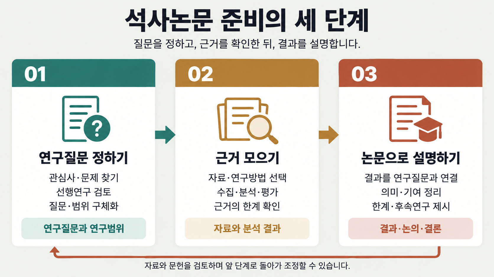
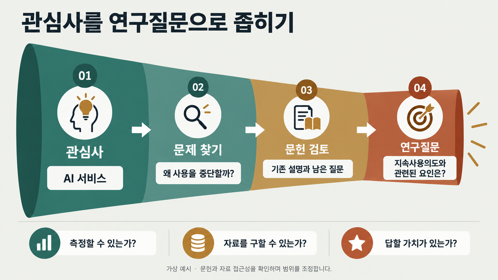
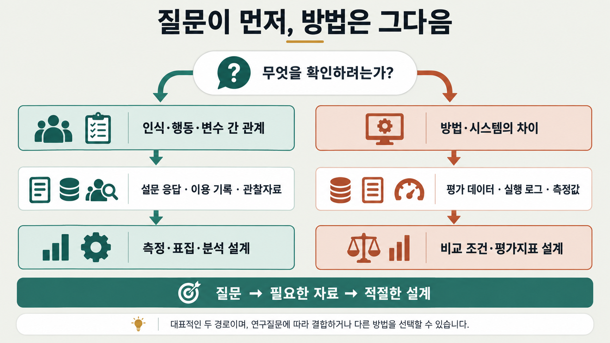
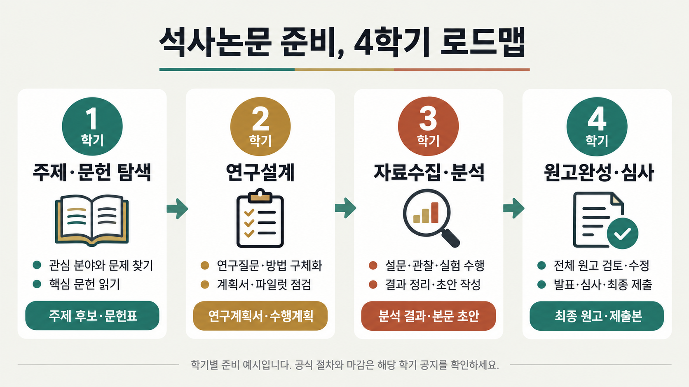

<meta charset="utf-8">
<meta name="description" content="석사 학위논문 작성 첫걸음부터 연구질문 도출, 4학기 일정 로드맵, 심사 체크리스트까지 한눈에 확인하는 가이드입니다.">
<meta property="og:description" content="석사 학위논문 작성 첫걸음부터 연구질문 도출, 4학기 일정 로드맵, 심사 체크리스트까지 한눈에 확인하는 가이드입니다.">
<meta name="viewport" content="width=device-width, initial-scale=1">
<title>석사논문 첫걸음</title>
<link rel="preconnect" href="https://fonts.googleapis.com">
<link rel="preconnect" href="https://fonts.gstatic.com" crossorigin>
<link rel="stylesheet" href="https://fonts.googleapis.com/css2?family=IBM+Plex+Mono:wght@400;500;600&display=swap">
<style>

/* ---- 웹 접근성 및 편의 기능 추가 스타일 ---- */
.skip-link{position:absolute;top:-50px;left:16px;background:var(--ink);color:var(--paper);padding:8px 16px;z-index:999;border-radius:var(--radius-sm);font-size:13px;font-weight:600;text-decoration:none;transition:top .2s ease;}
.skip-link:focus{top:12px;outline:3px solid var(--accent);outline-offset:2px;}

/* 네비게이션 컨테이너 및 도구 모음 */
.nav-wrap{display:flex;align-items:center;justify-content:space-between;max-width:var(--maxw);margin-inline:auto;}
.nav-actions{display:flex;align-items:center;gap:8px;margin-left:12px;flex-shrink:0;}
.theme-toggle-btn,.action-btn{display:inline-flex;align-items:center;justify-content:center;gap:5px;padding:6px 11px;font-size:12px;font-weight:600;border:1px solid var(--line);border-radius:999px;background:var(--paper-raised);color:var(--ink-soft);cursor:pointer;transition:all .15s;font-family:var(--font-body);user-select:none;}
.theme-toggle-btn:hover,.action-btn:hover{background:var(--paper-sunken);color:var(--ink);border-color:var(--ink-faint);}
.theme-toggle-btn:focus-visible,.action-btn:focus-visible{outline:2px solid var(--accent-ink);outline-offset:2px;}

/* 복사 버튼 UI */
.copy-wrap{position:relative;}
.copy-btn{position:absolute;top:10px;right:10px;font-size:11px;font-weight:600;padding:4px 9px;border:1px solid var(--line);border-radius:var(--radius-sm);background:var(--paper-raised);color:var(--ink-soft);cursor:pointer;transition:all .15s;z-index:2;}
.copy-btn:hover{background:var(--paper-sunken);color:var(--ink);}
.copy-btn.copied{background:var(--accent-soft);color:var(--accent-ink);border-color:var(--accent);}

/* 모바일 네비게이션 페이드 힌트 */
.nav-scroll-container{position:relative;flex:1;min-width:0;overflow:hidden;}
.nav-scroll-container::after{content:'';position:absolute;top:0;right:0;bottom:0;width:24px;pointer-events:none;background:linear-gradient(to right,transparent,var(--paper));opacity:.9;}


  :root{
    --paper:#FFFFFF; --paper-raised:#FFFFFF; --paper-sunken:#F7F6F3;
    --ink:#37352F; --ink-soft:#5F5E5A; --ink-faint:#6F6E69;
    --line:#E9E9E7;
    --accent:#2383E2; --accent-ink:#0B6BCB; --accent-soft:#E7F3F8;
    --track-a:#2383E2; --track-a-soft:#E7F3F8; --track-a-ink:#0B6BCB;
    --track-b:#E03E3E; --track-b-soft:#FBE4E4; --track-b-ink:#A32A3F;
    --radius:6px; --radius-sm:4px;
    --shadow:0 1px 2px rgba(15,15,15,.05), 0 10px 28px -16px rgba(15,15,15,.12);
    --font-display:'Pretendard','Apple SD Gothic Neo','Malgun Gothic',sans-serif;
    --font-body:'Pretendard','Apple SD Gothic Neo','Malgun Gothic',-apple-system,sans-serif;
    --font-mono:'IBM Plex Mono',ui-monospace,'SFMono-Regular',Menlo,monospace;
    --maxw:920px;
  }
  @media (prefers-color-scheme: dark){
    :root:not([data-theme="light"]){
      --paper:#191919; --paper-raised:#252525; --paper-sunken:#141414;
      --ink:#D4D4D4; --ink-soft:#B4B3B0; --ink-faint:#9B9A97;
      --line:#373737;
      --accent:#529CCA; --accent-ink:#8CC2E6; --accent-soft:#1C3243;
      --track-a:#529CCA; --track-a-soft:#1C3243; --track-a-ink:#8CC2E6;
      --track-b:#FF7369; --track-b-soft:#3B2222; --track-b-ink:#FF9A94;
      --shadow:0 1px 2px rgba(0,0,0,.4), 0 10px 28px -16px rgba(0,0,0,.6);
    }
  }
  :root[data-theme="dark"]{
    --paper:#191919; --paper-raised:#252525; --paper-sunken:#141414;
    --ink:#D4D4D4; --ink-soft:#B4B3B0; --ink-faint:#9B9A97;
    --line:#373737;
    --accent:#529CCA; --accent-ink:#8CC2E6; --accent-soft:#1C3243;
    --track-a:#529CCA; --track-a-soft:#1C3243; --track-a-ink:#8CC2E6;
    --track-b:#FF7369; --track-b-soft:#3B2222; --track-b-ink:#FF9A94;
    --shadow:0 1px 2px rgba(0,0,0,.4), 0 10px 28px -16px rgba(0,0,0,.6);
  }

  *{box-sizing:border-box;}
  body{background:var(--paper); color:var(--ink); font-family:var(--font-body); line-height:1.7; padding-inline:16px; -webkit-font-smoothing:antialiased;}
  h1,h2,h3{font-family:var(--font-display); font-weight:700; text-wrap:balance; margin:0;}
  p{margin:0;}
  ul,ol{margin:0; padding:0; list-style:none;}
  a{color:inherit;}
  .mono{font-family:var(--font-mono);}

  .wrap{max-width:var(--maxw); margin-inline:auto;}

  /* ---- nav ---- */
  .nav{position:sticky; top:env(safe-area-inset-top,0px); z-index:20; background:color-mix(in srgb, var(--paper) 88%, transparent); backdrop-filter:blur(8px); border-bottom:1px solid var(--line); margin-inline:-16px; padding-inline:16px;}
  .nav-inner{max-width:var(--maxw); margin-inline:auto; display:flex; gap:6px; overflow-x:auto; padding-block:10px; scrollbar-width:none;}
  .nav-inner::-webkit-scrollbar{display:none;}
  .nav a{flex:none; font-size:13px; font-weight:600; padding:7px 13px; border-radius:999px; color:var(--ink-soft); white-space:nowrap; text-decoration:none; transition:background .15s,color .15s;}
  .nav a:hover{background:var(--paper-sunken); color:var(--ink);}
  .nav a.active{background:var(--ink); color:var(--paper);}

  section{padding-block:56px; border-bottom:1px solid var(--line);}
  section:last-of-type{border-bottom:none;}
  .eyebrow{font-family:var(--font-mono); font-size:12px; letter-spacing:.09em; text-transform:uppercase; color:var(--accent-ink); background:var(--accent-soft); display:inline-block; padding:4px 10px; border-radius:999px; margin-bottom:14px;}
  h2{font-size:clamp(22px,3.6vw,30px); margin-bottom:8px;}
  .section-lede{color:var(--ink-soft); font-size:15px; max-width:64ch; margin-top:10px;}
  .purpose-strip{margin-top:16px; font-family:var(--font-display); font-style:normal; font-size:14.5px; color:var(--ink-soft); border-left:3px solid var(--accent); padding-left:12px; max-width:62ch;}
  .purpose-strip b{color:var(--ink); font-style:normal;}

  /* ---- hero ---- */
  .hero{padding-block:52px 44px; border-bottom:1px solid var(--line);}
  .hero h1{font-size:clamp(32px,6vw,48px); line-height:1.25;}
  .hero .lede{margin-top:16px; font-size:17px; color:var(--ink-soft); max-width:64ch;}
  .hero .badges{display:flex; flex-wrap:wrap; gap:8px; margin-top:22px;}
  .pill{font-size:12.5px; font-weight:600; padding:6px 12px; border-radius:999px; border:1px solid var(--line); color:var(--ink-soft); font-family:var(--font-mono);}
  .disclaimer{margin-top:28px; display:flex; gap:10px; align-items:flex-start; background:var(--paper-sunken); border:1px solid var(--line); border-radius:var(--radius-sm); padding:14px 16px; font-size:13.5px; color:var(--ink-soft);}
  .disclaimer .mark{font-size:16px; line-height:1;}

  /* ---- degree compare ---- */
  .degree-compare{margin-top:32px; border:1px solid var(--line); border-radius:var(--radius); background:var(--paper-raised); box-shadow:var(--shadow); overflow:hidden;}
  .degree-compare .dc-head{padding:18px 22px 4px;}
  .degree-compare .dc-head h3{font-family:var(--font-body); font-size:17px; font-weight:700;}
  .degree-compare .dc-head p{font-size:13.5px; color:var(--ink-soft); margin-top:6px;}
  .dc-row{display:grid; grid-template-columns:1fr 1fr 1fr; border-top:1px solid var(--line); font-size:13.5px;}
  .dc-row:first-of-type{border-top:1px solid var(--line); margin-top:14px;}
  .dc-row.head{background:var(--paper-sunken); font-weight:700; font-size:11.5px; text-transform:uppercase; letter-spacing:.03em; color:var(--ink-faint);}
  .dc-row > div{padding:12px 16px;}
  .dc-row > div:not(:first-child){border-left:1px solid var(--line);}
  .dc-row > div:first-child{font-weight:600; color:var(--ink-faint); font-size:12.5px;}
  @media (max-width:640px){
    .dc-row{grid-template-columns:1fr;}
    .dc-row.head{display:none;}
    .dc-row > div:not(:first-child){border-left:none; border-top:1px dashed var(--line);}
    .dc-row > div:first-child{padding-bottom:4px;}
    .dc-row > div:nth-child(2)::before,
    .dc-row > div:nth-child(3)::before{display:block; margin-bottom:4px; font-size:11px; font-weight:700; letter-spacing:.03em; color:var(--ink-faint);}
    .dc-row > div:nth-child(2)::before{content:"석사과정";}
    .dc-row > div:nth-child(3)::before{content:"박사과정";}
  }
  .degree-compare .dc-note{padding:14px 22px 20px; font-size:12.5px; color:var(--ink-faint); border-top:1px dashed var(--line); margin-top:4px;}

  a.mono{color:var(--accent-ink); text-decoration:none; border-bottom:1px solid color-mix(in srgb, var(--accent-ink) 35%, transparent);}
  a.mono:hover{border-bottom-color:var(--accent-ink);}
  a.mono:focus-visible{outline:2px solid var(--accent-ink); outline-offset:2px; border-radius:2px;}
  /* ---- 도식 블록 ---- */
  .dg{margin:26px 0; border:1px solid var(--line); border-radius:var(--radius); background:var(--paper-raised); box-shadow:var(--shadow); overflow:hidden;}
  .dg-head{padding:16px 20px 14px; border-bottom:1px solid var(--line);}
  .dg-head h3{font-family:var(--font-body); font-size:15.5px; font-weight:700;}
  .dg-head p{font-size:12.5px; line-height:1.7; color:var(--ink-soft); margin-top:5px;}
  .dg-body{padding:16px 20px 18px;}
  .dg-flow{display:grid; gap:10px;}
  .dg-flow.c2{grid-template-columns:repeat(2,1fr);}
  .dg-flow.c3{grid-template-columns:repeat(3,1fr);}
  .dg-flow.c4{grid-template-columns:repeat(4,1fr);}
  .dg-flow.c5{grid-template-columns:repeat(5,1fr);}
  .dg-step{position:relative; background:var(--paper-sunken); border-radius:var(--radius-sm); padding:12px 13px 13px;}
  .dg-flow > .dg-step + .dg-step::before{content:""; position:absolute; left:-13px; top:50%; transform:translateY(-50%); border-left:6px solid var(--ink-faint); border-top:5px solid transparent; border-bottom:5px solid transparent;}
  .dg-n{display:inline-block; min-width:18px; height:18px; line-height:18px; text-align:center; padding:0 4px; border-radius:5px; background:var(--accent-soft); color:var(--accent-ink); font-family:var(--font-mono); font-size:11px; font-weight:700; margin-bottom:7px;}
  .dg-step h4{font-family:var(--font-body); font-size:13.5px; font-weight:700; margin-bottom:5px;}
  .dg-step p{font-size:12.5px; line-height:1.65; color:var(--ink-soft);}
  .dg-back{position:relative; margin-top:10px; padding:9px 14px 9px 32px; border:1px dashed var(--line); border-radius:var(--radius-sm); font-size:12.5px; color:var(--ink-faint); background:var(--paper-sunken);}
  .dg-back::before{content:""; position:absolute; left:14px; top:50%; transform:translateY(-50%); border-right:6px solid var(--ink-faint); border-top:5px solid transparent; border-bottom:5px solid transparent;}
  .dg-note{margin-top:10px; padding:10px 13px; border-radius:var(--radius-sm); background:var(--track-b-soft); color:var(--track-b-ink); font-size:12.5px; line-height:1.7;}
  @media (max-width:760px){
    .dg-flow.c2,.dg-flow.c3,.dg-flow.c4,.dg-flow.c5{grid-template-columns:1fr;}
    .dg-flow > .dg-step + .dg-step::before{left:50%; top:-13px; transform:translateX(-50%); border-left:5px solid transparent; border-right:5px solid transparent; border-top:6px solid var(--ink-faint); border-bottom:none;}
  }

  .dg-trunk{position:relative; background:var(--ink); color:var(--paper); border-radius:var(--radius-sm); padding:12px 14px; margin-bottom:17px;}
  .dg-trunk h4{font-family:var(--font-body); font-size:13.5px; font-weight:700; margin-bottom:4px;}
  .dg-trunk p{font-size:12.5px; line-height:1.65; opacity:.82;}
  .dg-trunk::after{content:""; position:absolute; left:50%; bottom:-11px; transform:translateX(-50%); border-top:6px solid var(--ink); border-left:5px solid transparent; border-right:5px solid transparent;}
  .dg-flow.nb > .dg-step + .dg-step::before{display:none;}
  .dg-step.ta{background:var(--track-a-soft);}
  .dg-step.ta h4{color:var(--track-a-ink);}
  .dg-step.tb{background:var(--track-b-soft);}
  .dg-step.tb h4{color:var(--track-b-ink);}
  .dg-step.ta p,.dg-step.tb p{color:var(--ink);}
  .dg-slide{margin-top:12px; border-top:1px dashed var(--line); padding-top:10px;}
  .dg-slide summary{cursor:pointer; font-size:12px; color:var(--ink-faint); list-style:none; user-select:none;}
  .dg-slide summary::-webkit-details-marker{display:none;}
  .dg-slide summary::before{content:""; display:inline-block; vertical-align:middle; margin-right:7px; border-left:5px solid var(--ink-faint); border-top:4px solid transparent; border-bottom:4px solid transparent;}
  .dg-slide[open] summary::before{border-left:4px solid transparent; border-right:4px solid transparent; border-top:5px solid var(--ink-faint); border-bottom:none; margin-right:5px;}
  .dg-slide summary:focus-visible{outline:2px solid var(--accent-ink); outline-offset:2px; border-radius:3px;}
  .dg-slide img{width:100%; height:auto; margin-top:10px; border:1px solid var(--line); border-radius:var(--radius-sm); display:block;}
  .dg-src{padding:10px 20px 13px; border-top:1px dashed var(--line); font-size:11.5px; line-height:1.75; color:var(--ink-faint);}
  .dg-foot{margin-top:10px; padding:9px 13px; border-radius:var(--radius-sm); background:var(--paper-sunken); font-size:12.5px; line-height:1.7; color:var(--ink-soft);}

  /* ---- 용어 정의 블록 ---- */
  .defs{margin-bottom:32px; border:1px solid var(--line); border-radius:var(--radius); background:var(--paper-raised); box-shadow:var(--shadow); overflow:hidden;}
  .defs-head{padding:18px 22px 16px;}
  .defs-head .tag{display:inline-block; font-size:11px; font-weight:700; letter-spacing:.04em; padding:3px 10px; border-radius:999px; background:var(--accent-soft); color:var(--accent-ink); margin-bottom:10px;}
  .defs-head p{font-size:14px; line-height:1.75; color:var(--ink);}
  .defs-grid{display:grid; grid-template-columns:1fr 1fr; border-top:1px solid var(--line);}
  .def-card{padding:16px 20px 18px; border-left:1px solid var(--line);}
  .def-card:first-child{border-left:none;}
  .def-kicker{display:block; font-size:10.5px; font-weight:700; letter-spacing:.06em; margin-bottom:8px;}
  .def-card.m .def-kicker{color:var(--accent-ink);}
  .def-card.d .def-kicker{color:var(--track-b-ink);}
  .def-card h4{font-family:var(--font-body); font-size:17px; font-weight:700; margin-bottom:2px;}
  .def-card h4 span{font-size:11.5px; font-weight:500; color:var(--ink-faint); margin-left:7px;}
  .def-lead{font-size:13.5px; line-height:1.7; padding:10px 12px; border-radius:var(--radius-sm); margin:10px 0 12px;}
  .def-card.m .def-lead{background:var(--accent-soft); color:var(--accent-ink);}
  .def-card.d .def-lead{background:var(--track-b-soft); color:var(--track-b-ink);}
  .def-card dl{margin:0;}
  .def-card dl > div{display:grid; grid-template-columns:82px 1fr; gap:10px; padding:7px 0; border-top:1px dashed var(--line); font-size:12.5px; line-height:1.65;}
  .def-card dl > div:first-child{border-top:none; padding-top:0;}
  .def-card dt{font-weight:700; color:var(--ink-faint); font-size:11.5px;}
  .def-card dd{margin:0; color:var(--ink);}
  .defs-circle{display:grid; grid-template-columns:118px 1fr; gap:18px; align-items:center; padding:16px 22px; border-top:1px solid var(--line); background:var(--paper-sunken);}
  .dc-svg{width:118px; height:118px; display:block;}
  .dc-items{display:grid; grid-template-columns:repeat(3,1fr); gap:10px;}
  .dc-items > div{background:var(--paper-raised); border:1px solid var(--line); border-radius:var(--radius-sm); padding:9px 11px;}
  .dc-items b{display:block; font-size:12.5px; margin-bottom:3px;}
  .dc-items > div:nth-child(1) b{color:var(--ink-faint);}
  .dc-items > div:nth-child(2) b{color:var(--accent-ink);}
  .dc-items > div:nth-child(3) b{color:var(--track-b-ink);}
  .dc-items span{display:block; font-size:11.5px; line-height:1.6; color:var(--ink-soft);}
  .defs-src{padding:12px 22px 16px; border-top:1px dashed var(--line); font-size:11.5px; line-height:1.75; color:var(--ink-faint);}
  @media (max-width:760px){
    .defs-grid{grid-template-columns:1fr;}
    .def-card{border-left:none; border-top:1px solid var(--line);}
    .def-card:first-child{border-top:none;}
    .defs-circle{grid-template-columns:1fr; justify-items:center; gap:14px;}
    .dc-items{grid-template-columns:1fr; width:100%;}
  }

  /* ---- 논문 양식 블록 ---- */
  .fmt{margin-top:28px; border:1px solid var(--line); border-radius:var(--radius); background:var(--paper-raised); box-shadow:var(--shadow); overflow:hidden;}
  .fmt-band{border-top:1px solid var(--line); padding:18px 22px 20px;}
  .fmt-band:first-child{border-top:none;}
  .fmt-band > h3{font-size:12px; font-weight:700; letter-spacing:.05em; text-transform:uppercase; color:var(--ink-faint); margin-bottom:14px;}
  .fmt-band > h3 span{text-transform:none; letter-spacing:0; font-weight:400; color:var(--ink-faint); margin-left:8px;}
  .fmt-order{display:grid; grid-template-columns:repeat(3,1fr); border:1px solid var(--line); border-radius:var(--radius-sm); overflow:hidden;}
  .fmt-col{padding:13px 14px 15px; border-left:1px solid var(--line); background:var(--paper);}
  .fmt-col:first-child{border-left:none;}
  .fmt-chip{display:inline-block; font-size:11px; font-weight:700; padding:3px 10px; border-radius:999px; margin-bottom:11px;}
  .fmt-col.n .fmt-chip{background:var(--paper-sunken); color:var(--ink-faint);}
  .fmt-col.r .fmt-chip{background:var(--accent-soft); color:var(--accent-ink);}
  .fmt-col.a .fmt-chip{background:var(--ink); color:var(--paper);}
  .fmt-col ol{list-style:none; margin:0; padding:0;}
  .fmt-col li{display:flex; align-items:baseline; gap:8px; padding:6px 9px; border-radius:var(--radius-sm); font-size:13px; background:var(--paper-sunken); margin-bottom:5px;}
  .fmt-col li:last-child{margin-bottom:0;}
  .fmt-col li b{font-family:var(--font-mono); font-size:11px; color:var(--ink-faint); font-weight:600; min-width:15px;}
  .fmt-col li i{font-style:normal; margin-left:auto; padding-left:8px; font-size:10.5px; color:var(--ink-faint); text-align:right;}
  .fmt-col li.key{background:var(--track-b-soft);}
  .fmt-col li.key b,.fmt-col li.key i{color:var(--track-b-ink);}
  .fmt-col li.key em{font-style:normal; font-weight:700; color:var(--track-b-ink);}
  .fmt-spec{display:grid; grid-template-columns:repeat(3,1fr); gap:8px; margin:0;}
  .fmt-spec > div{background:var(--paper-sunken); border-radius:var(--radius-sm); padding:10px 13px;}
  .fmt-spec dt{font-size:10.5px; font-weight:700; letter-spacing:.03em; color:var(--ink-faint); margin-bottom:4px;}
  .fmt-spec dd{font-size:13px; margin:0;}
  .fmt-rows{display:grid; grid-template-columns:repeat(2,1fr); gap:0 24px;}
  .fmt-rows > div{display:grid; grid-template-columns:92px 1fr; gap:12px; padding:8px 0; border-top:1px dashed var(--line); font-size:12.5px; line-height:1.65;}
  .fmt-rows > div > b{font-weight:700; color:var(--ink-faint); font-size:11.5px;}
  .fmt-split{display:grid; grid-template-columns:1.15fr 1fr; gap:20px; align-items:start;}
  .fmt-split h4{font-size:11.5px; font-weight:700; letter-spacing:.03em; color:var(--ink-faint); margin-bottom:9px;}
  .fmt-warn > div{background:var(--track-b-soft); border-radius:var(--radius-sm); padding:10px 13px; font-size:12.5px; color:var(--track-b-ink); margin-bottom:7px;}
  .fmt-warn > div:last-child{margin-bottom:0;}
  .fmt-warn b{display:block; font-size:10.5px; letter-spacing:.03em; margin-bottom:3px;}
  .fmt-toc{background:var(--paper-sunken); border-radius:var(--radius-sm); padding:12px 15px; font-family:var(--font-mono); font-size:12.5px; line-height:1.95; margin:0; white-space:pre; overflow-x:auto;}
  .fmt-foot{padding:13px 22px 17px; border-top:1px dashed var(--line); font-size:12.5px; color:var(--ink-faint);}
  @media (max-width:820px){
    .fmt-order{grid-template-columns:1fr;}
    .fmt-col{border-left:none; border-top:1px solid var(--line);}
    .fmt-col:first-child{border-top:none;}
    .fmt-spec{grid-template-columns:repeat(2,1fr);}
    .fmt-rows{grid-template-columns:1fr;}
    .fmt-split{grid-template-columns:1fr;}
  }
  @media (max-width:520px){
    .fmt-spec{grid-template-columns:1fr;}
    .fmt-col li i{font-size:10px;}
  }

  /* ---- meaning cards ---- */
  .grid3{display:grid; grid-template-columns:repeat(3,1fr); gap:16px; margin-top:28px;}
  @media (max-width:720px){.grid3{grid-template-columns:1fr;}}
  .card{background:var(--paper-raised); border:1px solid var(--line); border-radius:var(--radius); padding:20px; box-shadow:var(--shadow);}
  .card .num{font-family:var(--font-mono); color:var(--accent-ink); font-size:13px; font-weight:600;}
  .card h3{font-size:17px; margin-top:8px; margin-bottom:8px; font-family:var(--font-body); font-weight:700;}
  .card p{font-size:14px; color:var(--ink-soft);}

  /* ---- purpose -> method table ---- */
  .pm-table{margin-top:26px; border:1px solid var(--line); border-radius:var(--radius); overflow:hidden; background:var(--paper-raised);}
  .pm-row{display:grid; grid-template-columns:1.4fr 1fr; border-top:1px solid var(--line); font-size:13.5px;}
  .pm-row:first-child{border-top:none; background:var(--paper-sunken); font-weight:700; font-size:12px; text-transform:uppercase; letter-spacing:.03em; color:var(--ink-faint);}
  .pm-row > div{padding:12px 14px;}
  .pm-row > div:last-child{border-left:1px solid var(--line); font-weight:600;}
  @media (max-width:640px){
    .pm-row{grid-template-columns:1fr;}
    .pm-row > div:last-child{border-left:none; border-top:1px dashed var(--line);}
  }

  /* ---- method cards ---- */
  .tracks{display:grid; grid-template-columns:1fr 1fr; gap:18px; margin-top:24px;}
  @media (max-width:720px){.tracks{grid-template-columns:1fr;}}
  .track-card{border-radius:var(--radius); padding:22px; border:1px solid var(--line); background:var(--paper-raised); box-shadow:var(--shadow);}
  .track-card.a{border-top:4px solid var(--track-a);}
  .track-card.b{border-top:4px solid var(--track-b);}
  .track-tag{font-family:var(--font-mono); font-size:11.5px; font-weight:700; letter-spacing:.02em; padding:3px 9px; border-radius:6px; display:inline-block;}
  .track-card.a .track-tag{background:var(--track-a-soft); color:var(--track-a-ink);}
  .track-card.b .track-tag{background:var(--track-b-soft); color:var(--track-b-ink);}
  .track-card h3{font-family:var(--font-body); font-size:19px; margin-top:12px;}
  .track-card .desc{font-size:14px; color:var(--ink-soft); margin-top:6px;}
  .track-card dl{margin-top:16px; display:grid; gap:10px;}
  .track-card dt{font-size:12px; font-weight:600; color:var(--ink-faint); text-transform:uppercase; letter-spacing:.04em;}
  .track-card dd{font-size:14px; margin:2px 0 0 0;}

  /* ---- roadmap ---- */
  .roadmap{position:relative; display:grid; grid-template-columns:repeat(4,1fr); gap:18px; margin-top:40px;}
  .roadmap::before{content:"";position:absolute; top:25px; left:44px; right:44px; height:2px; background:repeating-linear-gradient(90deg,var(--line) 0 6px, transparent 6px 12px); z-index:0;}
  .roadmap li{position:relative; z-index:1; display:flex; flex-direction:column; align-items:center; text-align:center; gap:10px;}
  .roadmap .badge{width:50px;height:50px;border-radius:50%; background:var(--paper-raised); border:2px solid var(--ink); display:flex;align-items:center;justify-content:center; font-family:var(--font-mono); font-weight:600; font-size:13px; flex:none;}
  .roadmap .stage-title{font-weight:700; font-size:14.5px;}
  .roadmap .stage-desc{font-size:12.5px; color:var(--ink-soft);}
  @media (max-width:720px){
    .roadmap{grid-template-columns:1fr; gap:26px;}
    .roadmap::before{top:0; bottom:0; left:24px; right:auto; width:2px; height:auto; background:repeating-linear-gradient(180deg,var(--line) 0 6px, transparent 6px 12px);}
    .roadmap li{flex-direction:row; align-items:flex-start; text-align:left; gap:16px;}
    .roadmap .badge{width:48px;height:48px;}
  }
  .roadmap-note{margin-top:22px; font-size:13px; color:var(--ink-faint); border-left:3px solid var(--accent); padding-left:12px;}

  /* ---- status callout ---- */
  .status-now{margin-top:26px; background:var(--accent-soft); border:1px solid var(--accent); border-radius:var(--radius-sm); padding:14px 16px; font-size:13.5px; color:var(--accent-ink); display:flex; gap:10px; align-items:flex-start;}
  .status-now .mark{font-size:15px; line-height:1.4; flex:none;}

  /* ---- sub headings inside a section ---- */
  .sub-h{font-family:var(--font-body); font-size:17px; font-weight:700; margin-top:38px;}
  .sub-lede{margin-top:6px;}

  /* ---- pipeline (8 stage) strip ---- */
  .pipeline-strip{display:flex; gap:10px; overflow-x:auto; margin-top:20px; padding-bottom:8px; scrollbar-width:thin;}
  .pipeline-step{flex:none; width:136px; background:var(--paper-raised); border:1px solid var(--line); border-radius:var(--radius-sm); padding:12px 14px; box-shadow:var(--shadow);}
  .pipeline-step em{display:block; font-family:var(--font-mono); font-size:10.5px; color:var(--accent-ink); font-style:normal; margin-bottom:6px;}
  .pipeline-step b{display:block; font-size:14px; margin-bottom:4px;}
  .pipeline-step span{font-size:12px; color:var(--ink-soft);}

  /* ---- M-code phase columns ---- */
  .phase-cols{display:grid; grid-template-columns:repeat(5,1fr); gap:12px; margin-top:20px;}
  @media (max-width:900px){.phase-cols{grid-template-columns:1fr 1fr;}}
  @media (max-width:520px){.phase-cols{grid-template-columns:1fr;}}
  .phase-col{border:1px solid var(--line); border-radius:var(--radius-sm); background:var(--paper-raised); padding:12px 12px 14px;}
  .phase-col h5{font-family:var(--font-mono); font-size:10.5px; text-transform:uppercase; letter-spacing:.03em; color:var(--ink-faint); margin-bottom:8px; font-weight:700;}
  .phase-col ul{display:grid; gap:6px;}
  .phase-col li{font-size:12.5px; line-height:1.5; color:var(--ink-soft);}
  .phase-col li b{font-family:var(--font-mono); color:var(--accent-ink); font-size:11.5px; margin-right:4px; font-weight:700;}

  /* ---- decision gate grid ---- */
  .gate-grid{display:grid; grid-template-columns:repeat(3,1fr); gap:10px; margin-top:20px;}
  @media (max-width:720px){.gate-grid{grid-template-columns:1fr 1fr;}}
  @media (max-width:480px){.gate-grid{grid-template-columns:1fr;}}
  .gate-chip{border:1px solid var(--line); border-radius:var(--radius-sm); background:var(--paper-raised); padding:10px 12px;}
  .gate-chip b{display:block; font-family:var(--font-mono); font-size:12px; color:var(--ink); margin-bottom:3px;}
  .gate-chip span{font-size:12px; color:var(--ink-soft);}

  /* ---- gantt board (원본 논문가이드 플랫폼 워크스트림 보드 재현) ---- */
  .gb-intro{display:grid; grid-template-columns:repeat(4,1fr); gap:1px; margin-top:20px; border:1px solid var(--line); background:var(--line);}
  @media (max-width:760px){.gb-intro{grid-template-columns:1fr 1fr;}}
  .gb-intro article{padding:10px 12px; background:var(--paper-sunken);}
  .gb-intro b{display:block; color:var(--ink); font-size:11px;}
  .gb-intro span{display:block; margin-top:4px; color:var(--ink-soft); font-size:10.5px; line-height:1.5;}

  .gb-legend{display:flex; flex-wrap:wrap; gap:6px; margin-top:14px;}
  .gb-legend span{padding:4px 9px; border:1px solid var(--line); font-size:11px; font-weight:700; border-radius:4px;}
  .gb-legend .critical{background:var(--ink); color:var(--paper); border-color:var(--ink);}
  .gb-legend .support{background:var(--paper-sunken); color:var(--ink);}
  .gb-legend .branch{background:var(--paper-raised); color:var(--ink); border:1px dashed var(--ink);}
  .gb-legend .approval{background:var(--paper-raised); color:var(--ink); border:2px solid var(--ink); padding:3px 8px;}

  .gb-scroll{margin-top:14px; overflow-x:auto; border:1px solid var(--line); background:var(--paper-raised); border-radius:var(--radius-sm);}
  .gb-board{min-width:1100px;}
  .gb-groups,.gb-head,.gb-row{display:grid; grid-template-columns:190px repeat(17,minmax(52px,1fr));}
  .gb-groups{border-bottom:1px solid var(--line); background:var(--ink); color:var(--paper);}
  .gb-groups b{grid-column:1; padding:8px 10px; border-right:1px solid color-mix(in srgb, var(--paper) 25%, transparent); font-size:10px;}
  .gb-groups span{padding:8px 5px; border-right:1px solid color-mix(in srgb, var(--paper) 25%, transparent); text-align:center; font-size:9.5px; font-weight:800; letter-spacing:.03em;}
  .gb-groups span:last-child{border-right:0;}
  .gb-head{border-bottom:1px solid var(--line); background:var(--paper-sunken);}
  .gb-head b,.gb-head span{padding:7px 4px; border-right:1px solid var(--line); color:var(--ink-soft); font-size:9.5px; text-align:center; line-height:1.3;}
  .gb-head b{padding-left:10px; color:var(--ink); text-align:left; font-weight:700;}
  .gb-head span:last-child{border-right:0;}
  .gb-row{position:relative; min-height:44px; border-bottom:1px solid var(--line); isolation:isolate;}
  .gb-row:last-child{border-bottom:0;}
  .gb-row:after{content:""; position:absolute; z-index:-1; left:190px; right:0; top:0; bottom:0; background:repeating-linear-gradient(to right, transparent 0 calc(100% / 17 - 1px), var(--paper-sunken) calc(100% / 17 - 1px) calc(100% / 17));}
  .gb-row.phase-break{border-top:3px solid var(--line);}
  .gb-label{grid-column:1; grid-row:1; padding:7px 9px; border-right:1px solid var(--line); background:var(--paper-raised);}
  .gb-label b{display:block; color:var(--ink); font-size:10.5px;}
  .gb-label span{display:block; margin-top:2px; color:var(--ink-faint); font-size:9px;}
  .gb-bar{grid-row:1; align-self:center; z-index:2; min-height:26px; margin:4px 3px; padding:5px 7px; background:var(--paper-sunken); border-left:3px solid var(--ink); color:var(--ink); font-size:9.5px; font-weight:700; line-height:1.35; overflow:hidden; border-radius:2px;}
  .gb-bar.critical{background:var(--ink); color:var(--paper);}
  .gb-bar.branch{background:var(--paper-raised); border:1px dashed var(--ink);}
  .gb-bar.approval{background:var(--paper-raised); border:2px solid var(--ink); padding:4px 6px;}
  .gb-bar.milestone{justify-self:center; min-width:40px; text-align:center; background:var(--ink); color:var(--paper); border:0; border-radius:3px;}

  .gb-note{display:grid; grid-template-columns:120px 1fr; margin-top:14px; border:1px solid var(--accent);}
  @media (max-width:640px){.gb-note{grid-template-columns:1fr;}}
  .gb-note b{display:grid; place-items:center; padding:10px; background:var(--accent-ink); color:var(--paper); font-size:10.5px; text-align:center;}
  .gb-note p{margin:0; padding:10px 12px; background:var(--accent-soft); color:var(--accent-ink); font-size:11.5px; line-height:1.6;}

  /* ---- gantt board: interactive additions (React) ---- */
  .gb-legend span{cursor:pointer; transition:opacity .15s, box-shadow .15s;}
  .gb-legend span:hover{opacity:.8;}
  .gb-legend span.is-filter-active{box-shadow:0 0 0 2px var(--accent);}
  .gb-filter-hint{margin-top:8px; font-size:11.5px; color:var(--accent-ink); font-weight:700;}
  .gb-semester-jump{display:flex; gap:6px; margin-top:12px;}
  .gb-jump-btn{font-family:var(--font-mono); font-size:11px; font-weight:700; padding:5px 11px; border-radius:999px; border:1px solid var(--line); background:var(--paper-sunken); color:var(--ink-soft); cursor:pointer;}
  .gb-jump-btn:hover{border-color:var(--accent); color:var(--accent-ink);}
  .gb-row{cursor:pointer;}
  .gb-row.is-dimmed .gb-label,.gb-row.is-dimmed .gb-bar{opacity:.3;}
  .gb-row.is-selected{background:var(--accent-soft);}
  .gb-row.is-selected .gb-label{background:var(--accent-soft);}
  .gb-detail,.gb-detail-hint{margin-top:14px; border:1px solid var(--line); border-radius:var(--radius-sm); padding:14px 16px; background:var(--paper-raised);}
  .gb-detail-hint{color:var(--ink-faint); font-size:12.5px; text-align:center;}
  .gb-detail b{display:block; font-family:var(--font-mono); font-size:13px; margin-bottom:8px;}
  .gb-detail dl{display:grid; grid-template-columns:88px 1fr; gap:6px 12px; margin:0;}
  .gb-detail dt{color:var(--ink-faint); font-size:11.5px; font-weight:700;}
  .gb-detail dd{margin:0; font-size:13px; color:var(--ink);}
  .gb-fallback{color:var(--ink-faint); font-size:13px; padding:16px 0;}
  .gb-legend .milestone{background:var(--ink); color:var(--paper); border-color:var(--ink);}
  .gb-bar.has-milestone{box-shadow:inset 3px 0 0 var(--accent-ink);}
  .gb-live{margin-top:8px; font-size:11.5px; font-weight:700; color:var(--accent-ink); min-height:1em;}
  .gb-row:focus-visible,.gb-legend span:focus-visible,.gb-jump-btn:focus-visible,.gb-scroll:focus-visible{outline:2px solid var(--accent-ink); outline-offset:2px;}

  /* ---- structure chapters ---- */
  .chapters{display:grid; grid-template-columns:1fr 1fr; gap:18px; margin-top:28px;}
  @media (max-width:720px){.chapters{grid-template-columns:1fr;}}
  .chapter-list{border:1px solid var(--line); border-radius:var(--radius); background:var(--paper-raised); box-shadow:var(--shadow); overflow:hidden;}
  .chapter-list .head{padding:14px 18px; font-weight:700; font-family:var(--font-mono); font-size:13px;}
  .chapter-list.a .head{background:var(--track-a-soft); color:var(--track-a-ink);}
  .chapter-list.b .head{background:var(--track-b-soft); color:var(--track-b-ink);}
  .chapter-list li{display:flex; gap:12px; padding:12px 18px; border-top:1px solid var(--line); font-size:14px; align-items:baseline;}
  .chapter-list li .n{font-family:var(--font-mono); color:var(--ink-faint); font-size:13px; flex:none; width:1.4em;}

  /* ---- topic method ---- */
  .mcm{display:grid; grid-template-columns:repeat(3,1fr); gap:16px; margin-top:28px;}
  @media (max-width:720px){.mcm{grid-template-columns:1fr;}}
  .mcm .card h3{font-family:var(--font-mono); font-size:14px; letter-spacing:.02em;}
  .template-card{margin-top:24px; background:var(--accent-soft); border:1px solid var(--accent); border-radius:var(--radius); padding:22px 24px; position:relative;}
  .template-card .tag{position:absolute; top:-11px; left:20px; background:var(--accent-ink); color:var(--paper); font-family:var(--font-mono); font-size:11px; font-weight:700; padding:3px 10px; border-radius:6px;}
  .template-card p{font-family:var(--font-display); font-size:16.5px; line-height:1.9; color:var(--accent-ink);}

  /* ---- checklist ---- */
  .checklist{margin-top:24px; display:grid; gap:10px;}
  .check-item{display:flex; gap:12px; align-items:flex-start; background:var(--paper-raised); border:1px solid var(--line); border-radius:var(--radius-sm); padding:12px 14px; font-size:14px;}
  .check-item input{margin-top:3px; width:16px; height:16px; accent-color:var(--track-a); flex:none;}
  .check-item label{cursor:pointer;}

  .mistakes{margin-top:16px; display:grid; gap:12px;}
  .mistake{display:flex; gap:14px; padding:14px 0; border-top:1px solid var(--line);}
  .mistake:first-child{border-top:none;}
  .mistake .idx{font-family:var(--font-mono); font-weight:700; color:var(--track-b-ink); flex:none; width:1.6em;}
  .mistake .body h4{font-size:14.5px; font-weight:700; margin-bottom:3px;}
  .mistake .body p{font-size:13.5px; color:var(--ink-soft);}

  /* ---- more ---- */
  .more-grid{display:grid; grid-template-columns:1fr 1fr; gap:16px; margin-top:26px;}
  @media (max-width:720px){.more-grid{grid-template-columns:1fr;}}
  .more-card{border:1px solid var(--line); border-radius:var(--radius); padding:18px 20px; background:var(--paper-raised);}
  .more-card h4{font-size:14px; font-weight:700; font-family:var(--font-mono); margin-bottom:8px;}
  .more-card p{font-size:13.5px; color:var(--ink-soft);}
  .more-card .path{display:block; margin-top:10px; font-family:var(--font-mono); font-size:12.5px; background:var(--paper-sunken); padding:6px 9px; border-radius:6px; word-break:break-all;}

  /* ---- resources ---- */
  .res-groups{display:grid; grid-template-columns:1fr; gap:20px; margin-top:26px;}
  .res-group{border:1px solid var(--line); border-radius:var(--radius); background:var(--paper-raised); padding:18px 20px; box-shadow:var(--shadow);}
  .res-group.a{border-left:4px solid var(--track-a);}
  .res-group.b{border-left:4px solid var(--track-b);}
  .res-group h4{font-family:var(--font-mono); font-size:12.5px; text-transform:uppercase; letter-spacing:.04em; margin-bottom:14px; color:var(--ink-faint);}
  .res-list{display:grid; gap:11px;}
  .res-item{display:flex; flex-wrap:wrap; align-items:baseline; gap:8px; font-size:14px;}
  .res-item a{font-weight:700; color:var(--accent-ink); text-decoration:none; border-bottom:1px solid var(--accent);}
  .res-item a:hover{opacity:.75;}
  .res-cat{font-family:var(--font-mono); font-size:10.5px; text-transform:uppercase; letter-spacing:.03em; color:var(--ink-faint); background:var(--paper-sunken); padding:2px 7px; border-radius:5px; flex:none;}
  .res-note{color:var(--ink-soft); font-size:13px;}

  footer{padding-block:36px calc(36px + env(safe-area-inset-bottom,0px)); font-size:12.5px; color:var(--ink-faint);}
  footer .wrap{display:flex; flex-direction:column; gap:6px;}

  /* ---- cross-guide nav pills (hub <-> track guides) ---- */
  .guide-links{display:flex; flex-wrap:wrap; gap:8px; margin-top:20px;}
  .guide-links a{font-size:12.5px; font-weight:600; padding:7px 14px; border-radius:999px; border:1px solid var(--line); color:var(--ink-soft); text-decoration:none; transition:background .15s,color .15s;}
  .guide-links a:hover{background:var(--paper-sunken); color:var(--ink);}

  /* ---- track-guide CTA cards ---- */
  .guide-cta-grid{display:grid; grid-template-columns:1fr 1fr; gap:18px; margin-top:28px;}
  @media (max-width:720px){.guide-cta-grid{grid-template-columns:1fr;}}
  .guide-cta{display:block; border-radius:var(--radius); padding:24px; border:1px solid var(--line); background:var(--paper-raised); box-shadow:var(--shadow); text-decoration:none; color:inherit; transition:transform .15s;}
  .guide-cta:hover{transform:translateY(-2px);}
  .guide-cta.a{border-top:4px solid var(--track-a);}
  .guide-cta.b{border-top:4px solid var(--track-b);}
  .guide-cta h3{font-size:19px; margin-top:12px; font-family:var(--font-body); font-weight:700;}
  .guide-cta p{font-size:13.5px; color:var(--ink-soft); margin-top:8px;}
  .guide-cta .go{margin-top:14px; display:block; font-family:var(--font-mono); font-size:12.5px; font-weight:700; color:var(--accent-ink);}
</style>
<link rel="stylesheet" href="assets/visual-guide.css?v=four-semesters">

<nav class="nav"><div class="nav-inner" id="navlinks">
  <a href="index.html">과정 선택</a>
  <a href="#meaning">의의</a>
  <a href="#topic">주제와 목적</a>
  <a href="#method">방법 선택</a>
  <a href="#guides">작성 가이드</a>
  <a href="#roadmap">일정</a>
  <a href="#format">논문 양식</a>
  <a href="#checklist">체크리스트</a>
  <a href="#resources">학습자료</a>
  <a href="#more">더 보기</a>
</div></div></div><div class="nav-actions"><button id="theme-toggle" class="theme-toggle-btn" type="button" aria-label="테마 전환"><svg width="14" height="14" viewBox="0 0 24 24" fill="none" stroke="currentColor" stroke-width="2"><path d="M21 12.79A9 9 0 1 1 11.21 3 7 7 0 0 0 21 12.79z"/></svg> 다크 모드</button></div></div></nav>

<header class="hero"><div class="wrap">
  <span class="eyebrow">신입 원우를 위한 논문작성 교보재</span>
  <h1>석사논문, 처음이라면<br>여기서부터.</h1>
  <p class="lede">논문은 <b>"무엇을 알고 싶은가"</b>라는 질문에서 시작합니다. 질문에 맞는 <b>자료와 방법</b>을 정하고, 확인한 결과의 의미와 한계를 설명합니다. 이 페이지에서는 주제 선정, 연구방법 선택, 전체 진행 순서를 살펴봅니다. 장별 집필과 분석 방법은 각 작성가이드에서 이어서 확인하세요.</p>
  <div class="badges">
    <span class="pill">목적 → 수단</span>
    <span class="pill">실증: 설문·관찰자료</span>
    <span class="pill">실험: 비교실험</span>
  </div>
  <div class="disclaimer">
    <span>이 자료는 석사과정 원우의 논문작성을 돕고자 만든 기초자료입니다.</span>
  </div>

  <div class="dg">
  <div class="dg-head">
    <h3>논문 준비 한눈에 보기</h3>
    <p>연구질문을 정하고, 근거를 모으고, 결과를 설명합니다. 세 단계는 한 방향으로만 가지 않습니다.</p>
  </div>
  <div class="dg-body">
    <div class="dg-flow c3">
      <div class="dg-step"><span class="dg-n">1</span><h4>연구질문 정하기</h4><p>관심사와 문제를 찾고 선행연구를 검토해 질문과 범위를 구체화합니다.</p></div>
      <div class="dg-step"><span class="dg-n">2</span><h4>근거 모으기</h4><p>자료와 방법을 선택해 수집·분석·평가하고 근거의 한계를 확인합니다.</p></div>
      <div class="dg-step"><span class="dg-n">3</span><h4>논문으로 설명하기</h4><p>결과를 연구질문과 연결하고 의미·기여·한계·후속연구를 정리합니다.</p></div>
    </div>
    <p class="dg-back">필요하면 앞 단계로 돌아가 범위를 조정합니다</p>
    <details class="dg-slide"><summary>원본 슬라이드 이미지 보기</summary><a href="assets/research-journey-slide.webp" target="_blank" rel="noopener"></a></details>
  </div>
  <p class="dg-src">근거: 이 가이드의 "목적 -> 수단" 구성(주제와 목적 절, 방법 선택 절)을 세 단계로 줄인 것입니다. 특정 규정이 아니라 이 가이드의 서술 구조입니다.</p>
</div>

</div></header>

<main id="main-content">
<section id="meaning"><div class="wrap">
  <div class="defs">
    <div class="defs-head">
      <span class="tag">먼저, 용어부터</span>
      <p>둘 다 대학원에서 학위논문을 쓰고 심사를 통과해야 받는 학위입니다. 다른 것은 <b>그 논문이 무엇을 증명해야 하는가</b>입니다.</p>
    </div>
    <div class="defs-grid">
      <div class="def-card m">
        <span class="def-kicker">석사의 정의</span>
        <h4>석사 <span>Master&#39;s degree</span></h4>
        <p class="def-lead">연구방법론을 처음부터 끝까지 <b>한 번 제대로 수행했음</b>을 보이면 됩니다.</p>
        <dl>
          <div><dt>받는 조건</dt><dd>학사 학위 취득 후 석사과정에서 자격요건을 충족하고, 지도교수 지도 아래 학위논문을 써서 심사를 통과</dd></div>
          <div><dt>논문이 증명할 것</dt><dd>방법론을 올바르게 적용했는가</dd></div>
          <div><dt>말의 유래</dt><dd>"Master"는 스승·장인을 뜻했습니다. 학위명 "석사"는 한국과 중화권에서 쓰고, 일본은 "슈시" 또는 "박사전기"라고 합니다</dd></div>
        </dl>
      </div>
      <div class="def-card d">
        <span class="def-kicker">박사의 정의</span>
        <h4>박사 <span>Ph.D. · Doctor of Philosophy</span></h4>
        <p class="def-lead">그 분야에 아직 없던 <b>독자적인 학술적 기여를 실제로 만들어냈음</b>을 증명해야 합니다.</p>
        <dl>
          <div><dt>받는 조건</dt><dd>석사 또는 학사 학위 취득 후 박사과정에서 학위논문을 써서 심사를 통과. 학위 체계에서 가장 높은 학위</dd></div>
          <div><dt>논문이 증명할 것</dt><dd>새로운 지식을 실제로 더했는가</dd></div>
          <div><dt>말의 유래</dt><dd>"Doctor"는 가르치다라는 뜻의 라틴어 docere에서, "Philosophiae"는 좁은 뜻의 철학이 아니라 중세 유럽 대학의 기초학부에서 왔습니다. 그래서 공학·경영학 박사도 Ph.D.입니다. 한국어 "박사"는 4세기 고구려 태학의 벼슬 이름에서 유래했습니다</dd></div>
        </dl>
      </div>
    </div>
    <div class="defs-circle">
      <svg class="dc-svg" viewBox="0 0 120 120" role="img" aria-label="인류의 지식 전체를 나타내는 큰 원. 가운데 작은 점이 학사, 그것을 감싼 원이 석사, 큰 원의 오른쪽 경계에 튀어나온 작은 돌기가 박사입니다.">
        <circle cx="56" cy="60" r="46" fill="var(--paper)" stroke="var(--line)" stroke-width="1.5"/>
        <circle cx="56" cy="60" r="20" fill="var(--accent-soft)" stroke="var(--accent)" stroke-width="1.5"/>
        <circle cx="56" cy="60" r="6" fill="var(--ink-faint)"/>
        <line x1="56" y1="60" x2="100" y2="60" stroke="var(--track-b)" stroke-width="1.5" stroke-dasharray="3 3"/>
        <circle cx="104" cy="60" r="8" fill="var(--track-b-soft)" stroke="var(--track-b)" stroke-width="2"/>
      </svg>
      <div class="dc-items">
        <div><b>학사</b><span>원 안에서 자기 전공만큼의 작은 영역을 갖습니다</span></div>
        <div><b>석사</b><span>그 영역을 조금 더 깊이 파고듭니다</span></div>
        <div><b>박사</b><span>지식의 경계까지 나아가 몇 년간 밀어붙여, 경계에 아주 작은 돌기 하나를 만들어냅니다</span></div>
      </div>
    </div>
    <p class="defs-src">위 정의와 비유는 백과사전 항목(위키백과 "석사" 2025-04-07 판, "박사" 2026-01-02 판)과 Matt Might의 칼럼 The illustrated guide to a Ph.D.(2010)를 정리한 것으로, <b>학교 규정이 아닙니다.</b> 실제 학위요건은 소속 대학원 학칙을 확인하세요. 과정별 요건 비교와 참고문헌은 <a class="mono" href="https://github.com/heen1987-ops/SSU-Xin_Lab-Master-guide/blob/main/04_%EC%84%9D%EC%82%AC%EC%99%80_%EB%B0%95%EC%82%AC%EC%9D%98_%EC%B0%A8%EC%9D%B4.md" target="_blank" rel="noopener">04_석사와_박사의_차이.md</a>, 용어 전반은 <a class="mono" href="https://github.com/heen1987-ops/SSU-Xin_Lab-Master-guide/blob/main/14_%ED%95%99%EC%9C%84%EB%85%BC%EB%AC%B8_%EC%9A%A9%EC%96%B4%EC%A0%95%EC%9D%98.md" target="_blank" rel="noopener">14_학위논문_용어정의.md</a>에 있습니다.</p>
  </div>
  <span class="eyebrow">Why</span>
  <h2>학위논문의 의의</h2>
  <p class="section-lede">학위논문을 준비하며 함께 생각할 세 가지입니다.</p>
  <div class="grid3">
    <div class="card">
      <div class="num">01</div>
      <h3>학위의 공식 요건</h3>
      <p>학위논문을 제출하려면 학점·종합시험·논문지도 등 적용 요건을 충족하고, 해당 학기의 발표·심사·최종 제출 절차를 따라야 합니다.</p>
    </div>
    <div class="card">
      <div class="num">02</div>
      <h3>연구방법론 훈련</h3>
      <p>질문을 세우고 문헌을 검토한 뒤, 자료를 수집·분석하고 결과를 정직하게 보고하는 과정을 경험합니다.</p>
    </div>
    <div class="card">
      <div class="num">03</div>
      <h3>아주 작은 기여</h3>
      <p>연구의 범위가 작더라도 기존 연구와의 차이, 새로 확인한 내용, 적용 범위와 한계를 근거로 설명해야 합니다.</p>
    </div>
  </div>

  <div class="degree-compare">
    <div class="dc-head">
      <h3>석사와 박사, 연구의 범위와 독립성</h3>
      <p>두 과정 모두 연구 역량과 학술적 기여를 요구합니다. 아래는 규정상 실제로 수치가 다른 항목만 모은 것입니다. 학점·종합시험·연구윤리교육·학위논문 심사를 거치는 구조 자체는 두 과정이 같습니다.</p>
    </div>
    <div class="dc-row head"><div></div><div>석사과정</div><div>박사과정</div></div>
    <div class="dc-row"><div>핵심 목표</div><div>명확한 질문에 적절한 방법과 근거로 답하는 역량 기르기</div><div>독립적 연구자로서 새로운 지식에 기여했음을 증명하는 것</div></div>
    <div class="dc-row"><div>취득 학점</div><div>24학점 이상</div><div>36학점 이상</div></div>
    <div class="dc-row"><div>논문지도 기간</div><div>2개학기 이상</div><div>3개학기 이상</div></div>
    <div class="dc-row"><div>심사위원</div><div>3명 전원 내부</div><div>5명 · 외부위원 1명 이상 필수</div></div>
    <div class="dc-row"><div>심사 횟수</div><div>2회 이상(공개발표 포함)</div><div>3회 이상</div></div>
    <div class="dc-row"><div>합격 판정</div><div>심사위원 2인 이상이 70점 이상</div><div>4인 이상이 80점 이상</div></div>
    <div class="dc-row"><div>제출가능연한</div><div>입학일로부터 6년 이내</div><div>10년 이내</div></div>
    <div class="dc-row"><div>연구의 자율성</div><div>지도교수와 질문·방법·해석을 검토하며 수행</div><div>연구 방향을 스스로 이끌어가는 자율성의 비중이 커짐</div></div>
    <p class="dc-note">학점·심사위원·심사횟수·합격판정·제출가능연한 수치는 <a class="mono" href="https://github.com/heen1987-ops/SSU-Xin_Lab-Master-guide/blob/main/06_%EB%85%BC%EB%AC%B8%EC%A0%9C%EC%B6%9C%EC%A0%88%EC%B0%A8%EC%99%80%EC%B2%B4%ED%81%AC%EB%A6%AC%EC%8A%A4%ED%8A%B8.md" target="_blank" rel="noopener">06_논문제출절차와체크리스트.md</a>·<a class="mono" href="https://github.com/heen1987-ops/SSU-Xin_Lab-Master-guide/blob/main/11_%EC%8B%AC%EC%82%AC%EC%9C%84%EC%9B%90_%ED%9B%84%EB%B3%B4%EC%99%80_%EA%B5%AC%EC%84%B1.md" target="_blank" rel="noopener">11_심사위원_후보와_구성.md</a>에서 `grad.ssu.ac.kr` 공지 원문과 학과 "학위논문 심사방법" 페이지로 확인한 값입니다(확인일 2026-09-22). 학술논문 게재 등 추가 요건은 적용 학과 내규를 따로 확인하세요. 과정별 상세는 <a class="mono" href="https://github.com/heen1987-ops/SSU-Xin_Lab-Master-guide/blob/main/04_%EC%84%9D%EC%82%AC%EC%99%80_%EB%B0%95%EC%82%AC%EC%9D%98_%EC%B0%A8%EC%9D%B4.md" target="_blank" rel="noopener">04_석사와_박사의_차이.md</a>에 있습니다.</p>
  </div>
</div></section>

<section id="topic"><div class="wrap">
  <span class="eyebrow">Topic &amp; Purpose</span>
  <h2>주제와 연구목적 정하기</h2>
  <p class="section-lede">관심사를 문헌과 자료로 확인할 수 있는 연구질문으로 좁혀 보세요.</p>
<div class="dg">
  <div class="dg-head">
    <h3>주제 선정 <span style="font-weight:400; color:var(--ink-faint); font-size:12.5px;">가상 예시</span></h3>
    <p>관심사에서 출발해 문헌과 자료로 확인할 수 있는 연구질문까지 좁혀 갑니다.</p>
  </div>
  <div class="dg-body">
    <div class="dg-flow c4">
      <div class="dg-step"><span class="dg-n">1</span><h4>관심사</h4><p>AI 서비스에 관심을 갖습니다.</p></div>
      <div class="dg-step"><span class="dg-n">2</span><h4>문제 찾기</h4><p>왜 사용을 중단하는지 질문합니다.</p></div>
      <div class="dg-step"><span class="dg-n">3</span><h4>문헌 검토</h4><p>기존 설명과 남은 질문을 구분합니다.</p></div>
      <div class="dg-step"><span class="dg-n">4</span><h4>연구질문</h4><p>지속사용의도와 관련된 요인이 무엇인지 구체화합니다.</p></div>
    </div>
    <p class="dg-back">문헌과 자료 접근성을 확인하며 범위를 조정합니다</p>
    <p class="dg-foot">네 단계를 지난 뒤 <b>측정할 수 있는가 · 자료를 구할 수 있는가 · 답할 가치가 있는가</b> 세 가지를 점검합니다. 아래 카드에서 이어집니다.</p>
    <details class="dg-slide"><summary>원본 슬라이드 이미지 보기</summary><a href="assets/research-topic-slide.webp" target="_blank" rel="noopener"></a></details>
  </div>
  <p class="dg-src">근거: 아래 MEASURABLE / COLLECTIBLE / MEANINGFUL 카드와 <a class="mono" href="https://github.com/heen1987-ops/SSU-Xin_Lab-Master-guide/blob/main/12_%EB%8B%A8%EA%B3%84%EB%B3%84_%EC%A7%80%EC%B9%A8_%EB%9D%BC%EC%9D%B4%EB%B8%8C%EB%9F%AC%EB%A6%AC/01_%EC%97%B0%EA%B5%AC%EC%A3%BC%EC%A0%9C%ED%83%90%EC%83%89.md" target="_blank" rel="noopener">12_단계별_지침_라이브러리/01_연구주제탐색.md</a>의 후보 비교 절차를 옮긴 것입니다. 본문의 AI 서비스 사례는 <b>가상 예시</b>이며 실제 연구 결과가 아닙니다.</p>
</div>
<details class="reading-details"><summary>주제 점검 기준과 연구목적 문장틀</summary><div class="reading-details-body">
<p class="section-lede">관심 있는 현상을 정했다면 무엇을 확인할지 구체화합니다. 아래 세 가지를 점검하면서 문헌, 자료 접근성, 연구 범위를 함께 검토하세요.</p>
<div class="mcm">
    <div class="card">
      <h3>MEASURABLE</h3>
      <p>개념을 정의하고 실제로 관찰·측정할 수 있는가? 척도가 있는가, 있다면 어떤 한계가 있는가.</p>
    </div>
    <div class="card">
      <h3>COLLECTIBLE</h3>
      <p>그 대상·기간·조건의 자료에 실제로 접근할 수 있는가? 모집단·자료원과 수집 권한을 확보할 수 있는가.</p>
    </div>
    <div class="card">
      <h3>MEANINGFUL</h3>
      <p>답을 얻으면 이론이나 실무에서 무엇이 달라지는가? "중요한 현상"과 "학술적 공백"을 구분한다.</p>
    </div>
  </div>
  <div class="template-card">
    <span class="tag">목적 문장틀</span>
    <p>"[대상·맥락]에서 [관찰된 현상]이 보고되었다([실제 근거]). 기존 연구는 [설명]을 제시했으나, [확인된 조건]에서는 [구체적 미해결점]이 남는다. 본 연구는 [분석단위·대상]의 [개념/비교]와 [결과·시점]에 관한 <b>[질문·추론 목적]</b>을 [자료·설계]로 검토한다."</p>
  </div>
  <p class="roadmap-note">이 문장의 <b>[질문·추론 목적]</b> 부분이 다음 절에서 고를 수단(실증/실험)을 결정합니다. 이 목적 문장은 그대로 <b>논문계획서의 핵심 뼈대</b>가 됩니다 — 계획서를 실제로 어떻게 쓰는지는 <a class="mono" href="https://github.com/heen1987-ops/SSU-Xin_Lab-Master-guide/blob/main/13_%EC%97%B0%EA%B5%AC%EA%B3%84%ED%9A%8D%EC%84%9C_%EC%9E%91%EC%84%B1%EB%B2%95%EA%B3%BC_%EB%85%BC%EB%AC%B8%EC%9E%91%EC%84%B1_%ED%8C%81.md" target="_blank" rel="noopener">13_연구계획서_작성법과_논문작성_팁.md</a>를 참고하세요.</p>
</div></details>
</div></section>

<section id="method"><div class="wrap">
  <span class="eyebrow">Purpose → Method</span>
  <h2>연구질문에 맞는 방법 고르기</h2>
  <p class="section-lede">연구질문에 답하는 데 필요한 자료와 설계를 먼저 정하세요.</p>
<div class="dg">
  <div class="dg-head">
    <h3>연구방법 선택</h3>
    <p>대표적인 두 경로입니다. 질문에 따라 결합하거나 다른 방법을 선택할 수 있습니다.</p>
  </div>
  <div class="dg-body">
    <div class="dg-trunk">
      <h4>무엇을 확인하려는지 연구질문을 먼저 정합니다</h4>
      <p>방법이 질문을 정하는 것이 아니라, 질문이 방법을 정합니다.</p>
    </div>
    <div class="dg-flow c2 nb">
      <div class="dg-step ta"><h4>인식·행동·변수 간 관계</h4><p>설문 응답·이용 기록·관찰자료를 바탕으로 측정·표집·분석을 설계합니다.</p></div>
      <div class="dg-step tb"><h4>방법·시스템의 차이</h4><p>평가 데이터·실행 로그·측정값을 바탕으로 비교 조건과 평가지표를 설계합니다.</p></div>
    </div>
    <p class="dg-foot">질문 &#8594; 필요한 자료 &#8594; 적절한 설계 순으로 검토합니다.</p>
    <details class="dg-slide"><summary>원본 슬라이드 이미지 보기</summary><a href="assets/research-method-slide.webp" target="_blank" rel="noopener"></a></details>
  </div>
  <p class="dg-src">근거: 같은 절의 "목적 문장이 확인하려는 것 / 적합한 수단" 표와 두 트랙 카드를 그림으로 옮긴 것입니다. 두 경로가 모든 연구방법을 나누는 분류는 아닙니다.</p>
</div>
<details class="reading-details"><summary>두 연구 경로의 도구·질문·산출물 비교</summary><div class="reading-details-body">
<p class="section-lede">이 가이드는 설문·관찰자료 연구와 알고리즘·시스템 평가를 중심으로 안내합니다. <b>"이 질문에 답하려면 어떤 자료와 설계가 필요한가?"</b>를 먼저 생각하세요. 두 경로가 모든 연구방법을 나누는 분류는 아닙니다.</p>
<div class="pm-table">
    <div class="pm-row"><div>목적 문장이 확인하려는 것</div><div>적합한 수단</div></div>
    <div class="pm-row"><div>사람들이 왜·어떻게 특정 인식·태도·행동의도를 갖는지 설명하려는 목적</div><div>실증 (설문·관찰자료 분석)</div></div>
    <div class="pm-row"><div>알고리즘·시스템의 성능·비용·한계가 조건에 따라 어떻게 달라지는지 평가</div><div>실험 (비교실험)</div></div>
  </div>

  <div class="tracks">
    <div class="track-card a">
      <span class="track-tag">인식·태도 확인이 목적일 때</span>
      <h3>실증 — 설문·관찰자료</h3>
      <p class="desc">설문 응답이나 관찰자료로 사람·조직의 인식과 행동, 변수 간 관계를 분석합니다. SEM은 질문과 자료 조건에 따라 선택하는 분석 방법 중 하나입니다.</p>
      <dl>
        <div><dt>가설의 형태</dt><dd>H1: 변수 A → 변수 B (정적/부적 관계)</dd></div>
        <div><dt>핵심 도구</dt><dd>설문지, Cronbach's α, CFA/SEM, PLS-SEM</dd></div>
        <div><dt>목적 예시</dt><dd>이용자가 이 서비스를 계속 쓰는 이유를 설명하기 위해</dd></div>
        <div><dt>대표 산출물</dt><dd>연구모형, 분석 결과표, 연구질문에 답하는 학위논문</dd></div>
      </dl>
    </div>
    <div class="track-card b">
      <span class="track-tag">성능·효과 확인이 목적일 때</span>
      <h3>실험 — 비교실험</h3>
      <p class="desc">알고리즘·모델·시스템을 설계하고, 비교 기준(baseline)과의 실험으로 성능을 검증하는 수단입니다.</p>
      <dl>
        <div><dt>주장의 형태</dt><dd>"이 조건에서 두 방법의 성능과 비용은 어떻게 다른가?"</dd></div>
        <div><dt>핵심 도구</dt><dd>벤치마크 데이터셋, 실험 코드, 평가지표</dd></div>
        <div><dt>목적 예시</dt><dd>실시간 처리 조건에서 제안 모델의 속도·정확도·비용을 비교하기 위해</dd></div>
        <div><dt>대표 산출물</dt><dd>비교실험 결과표, 재현 가능한 기록, 학위논문 또는 학회지 원고</dd></div>
      </dl>
    </div>
  </div>
  <p class="roadmap-note">그래도 애매하면 지도교수·선배 원우에게 먼저 확인하세요 — 이 표가 판단을 대신하지 않습니다. 두 가이드는 최근 사례를 바탕으로 <b>5장 구성 예시</b>를 제시합니다. 장 수와 분량은 고정 요건이 아니며, 연구 내용과 지도교수의 지도를 확인해 정합니다.</p>
</div></details>
</div></section>

<section id="guides"><div class="wrap">
  <span class="eyebrow">Write</span>
  <h2>트랙을 정했다면, 작성가이드로</h2>
  <p class="section-lede">여기서는 목적과 방법을 고르는 것까지만 다룹니다. 5장 구성·분량 배분·인용 스타일·방법론 심화·최근 사례는 트랙별 작성가이드에 있습니다.</p>
  <div class="guide-cta-grid">
    <a class="guide-cta a" href="https://claude.ai/artifact/2pqKKftCEUBht1NmE7zusB">
      <span class="track-tag" style="background:var(--track-a-soft); color:var(--track-a-ink);">설문 · SEM</span>
      <h3>실증논문 작성가이드</h3>
      <p>이론과 가설, 측정·표본설계, 인과추론과 강건성, APA7 인용, 김승연(2026) 사례까지.</p>
      <span class="go">가이드 열기 →</span>
    </a>
    <a class="guide-cta b" href="https://claude.ai/artifact/F2HNkajDJ1fryb9h3DvXuh">
      <span class="track-tag" style="background:var(--track-b-soft); color:var(--track-b-ink);">비교실험</span>
      <h3>실험논문 작성가이드</h3>
      <p>연구 성격별 설계 점검, 공정한 비교, IEEE 인용 예시와 최근 논문 사례까지.</p>
      <span class="go">가이드 열기 →</span>
    </a>
  </div>
</div></section>

<section id="roadmap"><div class="wrap">
  <span class="eyebrow">4-Semester Roadmap</span>
  <h2>4학기 논문 준비</h2>
  <div class="dg">
  <div class="dg-head">
    <h3>학기별 목표와 결과물</h3>
    <p>각 학기가 끝났을 때 손에 남아 있어야 하는 것입니다. 시간 배분은 아래 간트차트에서 이어집니다.</p>
  </div>
  <div class="dg-body">
    <div class="dg-flow c4">
      <div class="dg-step"><span class="dg-n">1학기</span><h4>탐색</h4><p>주제 후보, 핵심문헌표, 연구질문 정리</p></div>
      <div class="dg-step"><span class="dg-n">2학기</span><h4>설계</h4><p>연구계획서 작성, 수집 전 필요한 승인과 파일럿 점검</p></div>
      <div class="dg-step"><span class="dg-n">3학기</span><h4>수행</h4><p>자료수집·분석, 결과표와 본문 초안 작성</p></div>
      <div class="dg-step"><span class="dg-n">4학기</span><h4>완성</h4><p>전체 원고 검토·수정, 발표·심사·최종 제출</p></div>
    </div>
    <details class="dg-slide"><summary>원본 슬라이드 이미지 보기</summary><a href="assets/four-semester-roadmap.webp" target="_blank" rel="noopener"></a></details>
  </div>
  <p class="dg-src">근거: <a class="mono" href="https://github.com/heen1987-ops/SSU-Xin_Lab-Master-guide/blob/main/10_%EC%98%88%EC%83%81%EC%9D%BC%EC%A0%95_2027%EB%85%842%ED%95%99%EA%B8%B0_%EA%B0%84%ED%8A%B8%EC%B0%A8%ED%8A%B8.md" target="_blank" rel="noopener">10_예상일정_2027년2학기_간트차트.md</a>의 WBS 완료 기준(산출물)에서 학기별로 추린 것입니다. 1~3학기 배분은 일반적인 진행 예시이고, 4학기만 26-1·26-2 공식 일정에서 환산한 값입니다.</p>
</div>
  <figure class="semester-gantt" aria-labelledby="semester-gantt-title">
    <figcaption><h3 id="semester-gantt-title">4학기 간트차트</h3><p>막대는 중점 진행 학기를 나타냅니다.</p></figcaption>
    <p id="semester-gantt-hint" class="semester-gantt-hint">표를 좌우로 움직여 확인하세요.</p>
    <div class="semester-gantt-scroll" role="region" aria-labelledby="semester-gantt-title" aria-describedby="semester-gantt-hint" tabindex="0">
      <table class="semester-gantt-table">
        <caption class="semester-gantt-sr">1~4학기 논문 준비 예시. 실제 진도와 공식 일정에 맞춰 조정합니다.</caption>
        <colgroup><col class="semester-gantt-task-col"><col span="4"></colgroup>
        <thead><tr><th scope="col">할 일</th><th id="gantt-semester-1" scope="col">1학기<span>탐색</span></th><th id="gantt-semester-2" scope="col">2학기<span>설계</span></th><th id="gantt-semester-3" scope="col">3학기<span>수행</span></th><th id="gantt-semester-4" scope="col">4학기<span>완성</span></th></tr></thead>
        <tbody>
        <tr><th id="gantt-task-1" scope="row">주제·문헌 검토</th><td colspan="2" headers="gantt-task-1 gantt-semester-1 gantt-semester-2" class="gantt-active" data-start="1" data-end="2"><span class="semester-gantt-bar gantt-explore"><span class="semester-gantt-sr">1~2학기: </span>탐색 → 구체화</span></td><td></td><td></td></tr>
        <tr><th id="gantt-task-2" scope="row">연구설계·사전점검</th><td></td><td colspan="1" headers="gantt-task-2 gantt-semester-2" class="gantt-active" data-start="2" data-end="2"><span class="semester-gantt-bar gantt-design"><span class="semester-gantt-sr">2학기: </span>계획·파일럿</span></td><td></td><td></td></tr>
        <tr><th id="gantt-task-3" scope="row">자료수집·분석</th><td></td><td></td><td colspan="1" headers="gantt-task-3 gantt-semester-3" class="gantt-active" data-start="3" data-end="3"><span class="semester-gantt-bar gantt-research"><span class="semester-gantt-sr">3학기: </span>수집·분석</span></td><td></td></tr>
        <tr><th id="gantt-task-4" scope="row">집필·검토·수정</th><td></td><td></td><td colspan="2" headers="gantt-task-4 gantt-semester-3 gantt-semester-4" class="gantt-active" data-start="3" data-end="4"><span class="semester-gantt-bar gantt-writing"><span class="semester-gantt-sr">3~4학기: </span>초안 → 최종 원고</span></td></tr>
        <tr><th id="gantt-task-5" scope="row">발표·심사·제출</th><td></td><td></td><td></td><td colspan="1" headers="gantt-task-5 gantt-semester-4" class="gantt-active" data-start="4" data-end="4"><span class="semester-gantt-bar gantt-finish"><span class="semester-gantt-sr">4학기: </span>심사·제출</span></td></tr>
        </tbody>
      </table>
    </div>
  </figure>

  <details class="reading-details"><summary>WBS·상세 간트차트 보기 (WBS 1.1~4.7 · 임계경로)</summary><div class="reading-details-body">
  <p class="section-lede">작업분류체계(WBS)를 시간 축에 배치한 상세 간트차트입니다. 절대 날짜 대신 <b>학기 시작 후 몇 주차인지</b>로 표시해, 실제 개강일이 언제든 그대로 대입해 쓸 수 있습니다. 막대·범례를 눌러보세요. 항목·완료기준·선행조건 전체 목록은 10번 문서(WBS·간트차트)에 있습니다.</p>
  <div id="wbs-gantt-root"><p class="gb-fallback">인터랙티브 간트차트를 불러오지 못했습니다(네트워크 차단 또는 스크립트 차단). 같은 내용을 <a href="https://github.com/heen1987-ops/SSU-Xin_Lab-Master-guide/blob/main/10_%EC%98%88%EC%83%81%EC%9D%BC%EC%A0%95_2027%EB%85%842%ED%95%99%EA%B8%B0_%EA%B0%84%ED%8A%B8%EC%B0%A8%ED%8A%B8.md">10번 문서의 WBS·간트차트 표</a>에서 확인하세요.</p></div>
  <p class="roadmap-note">4학기(제출학기)의 주차는 실제로 확인된 2026학년도 봄·가을 두 학기의 공식 일정을 환산한 것이며, 1~3학기는 일반적인 진행 예시입니다.</p>
  </div></details>
  <script src="https://unpkg.com/react@18/umd/react.production.min.js" crossorigin defer></script>
  <script src="https://unpkg.com/react-dom@18/umd/react-dom.production.min.js" crossorigin defer></script>
  <script defer>
  window.addEventListener('DOMContentLoaded', function(){
    if (!window.React || !window.ReactDOM) return;
    var e = React.createElement;

    var TYPE_LABEL = {
      critical: '핵심 작업',
      support: '병행 지원작업',
      branch: '실증·실험 분기',
      approval: '지도교수 결정·승인',
      milestone: '공식 관문'
    };

    // critical: 10_예상일정 문서의 WBS 표 "임계경로" 열과 1:1로 맞춘 값
    // milestone: 같은 표에서 완료기준에 "마일스톤"으로 표시된 항목
    var WBS_DATA = [
      {id:'1', wbs:'1.1–1.2', label:'주제·문헌 탐색', deliverable:'후보 주제 2~3개, 문헌표·Gap 정리', bar:'탐색·검토', col:2, span:2, type:'critical', critical:true, pre:'–'},
      {id:'2', wbs:'1.3', label:'연구질문·목적 확정', deliverable:'연구질문·목적 문장 1개', bar:'목적 문장 1개', col:4, span:1, type:'approval', critical:true, milestone:true, pre:'1.2'},
      {id:'3', wbs:'2.1–2.2', label:'연구설계 초안', deliverable:'3장 설계 초안, 측정도구·실험환경', bar:'설계 초안', col:6, span:2, type:'critical', critical:true, pre:'1.3', brk:true},
      {id:'4', wbs:'2.3', label:'연구계획서 승인', deliverable:'지도교수가 승인한 연구계획서', bar:'지도교수 승인', col:8, span:1, type:'approval', critical:true, milestone:true, pre:'2.2'},
      {id:'5', wbs:'2.4', label:'파일럿·사전점검', deliverable:'파일럿 결과, 프로토콜 수정본', bar:'파일럿', col:9, span:1, type:'critical', critical:true, pre:'2.3'},
      {id:'6', wbs:'3.1', label:'본 수집·실험 수행', deliverable:'원자료(raw data)', bar:'수집·실험·기록', col:10, span:3, type:'critical', critical:true, pre:'2.4', brk:true},
      {id:'7', wbs:'', label:'실증 트랙 분기', deliverable:'설문·척도 → 측정검증 → 주 분석', bar:'표본·척도·모형', col:10, span:3, type:'branch', critical:false, pre:'3.1'},
      {id:'8', wbs:'', label:'실험 트랙 분기', deliverable:'Baseline·Metric → 반복·Ablation', bar:'비교·반복·오류분석', col:10, span:3, type:'branch', critical:false, pre:'3.1'},
      {id:'9', wbs:'3.2', label:'자료 정제·분석', deliverable:'결과표·그림', bar:'결과표·그림', col:12, span:2, type:'critical', critical:true, milestone:true, pre:'3.1'},
      {id:'10', wbs:'3.3', label:'3·4장 초안 작성', deliverable:'3·4장 본문 초안', bar:'초안 작성', col:13, span:1, type:'critical', critical:true, pre:'3.2'},
      {id:'11', wbs:'4.1', label:'전체 원고 v1', deliverable:'1~5장·초록·참고문헌 포함 완성 초고', bar:'완성 초고', col:14, span:1, type:'critical', critical:true, pre:'3.3', brk:true},
      {id:'12', wbs:'4.2', label:'수료생 연구등록(공식)', deliverable:'등록비·지도비 납부', bar:'등록', col:14, span:1, type:'milestone', critical:true, milestone:true, pre:'4.1'},
      {id:'13', wbs:'4.3', label:'공개발표·심사위원 구성(공식)', deliverable:'논문 공개발표, 연구윤리준수확인서 제출, 심사위원 위촉', bar:'발표 → 위원 위촉', col:14, span:2, type:'approval', critical:true, milestone:true, pre:'4.2'},
      {id:'14', wbs:'4.4', label:'가제본·카피킬러 제출(공식)', deliverable:'가제본·표절검사 결과 제출', bar:'검사결과 제출', col:15, span:2, type:'critical', critical:true, pre:'4.3'},
      {id:'15', wbs:'4.5', label:'심사비 납부(공식)', deliverable:'심사비 납부 — 4.4보다 먼저 끝나므로 임계경로 밖', bar:'납부', col:15, span:1, type:'support', critical:false, pre:'4.4'},
      {id:'16', wbs:'4.6', label:'최종심사(공식)', deliverable:'본심사 통과', bar:'심사 통과', col:16, span:2, type:'critical', critical:true, milestone:true, pre:'4.4, 4.5'},
      {id:'17', wbs:'4.7', label:'최종서류 제출(공식)', deliverable:'dCollection 업로드, 완본 제출 — 학위논문 완성', bar:'제출', col:18, span:1, type:'milestone', critical:true, milestone:true, pre:'4.6'}
    ];

    var LEGEND = [
      {key:'critical', label:'임계경로(늦어지면 전체 일정이 밀림)'},
      {key:'support', label:'병행 지원작업(여유 있음)'},
      {key:'branch', label:'실증·실험 분기'},
      {key:'approval', label:'지도교수 결정·승인'},
      {key:'milestone', label:'마일스톤(공식 관문)'}
    ];

    function matchesFilter(task, key){
      if (!key) return true;
      if (key === 'critical') return task.critical === true;
      if (key === 'milestone') return task.milestone === true;
      return task.type === key;
    }

    function GanttBoard(){
      var f = React.useState(null), filterKey = f[0], setFilterKey = f[1];
      var s = React.useState(null), selectedId = s[0], setSelectedId = s[1];
      var scrollRef = React.useRef(null);
      var selected = null;
      for (var i=0;i<WBS_DATA.length;i++){ if (WBS_DATA[i].id===selectedId) selected = WBS_DATA[i]; }

      function jumpToSemester(sem){
        var el = scrollRef.current;
        if (!el) return;
        var cells = el.querySelectorAll('.gb-head span');
        var target = cells[(sem-1)*4];
        if (!target) return;
        el.scrollLeft = (sem === 1) ? 0
          : el.scrollLeft + (target.getBoundingClientRect().left - el.getBoundingClientRect().left);
      }
      function toggleFilter(key){ setFilterKey(filterKey===key ? null : key); }
      function toggleSelect(id){ setSelectedId(selectedId===id ? null : id); }
      function onKey(ev, fn){ if (ev.key==='Enter' || ev.key===' '){ ev.preventDefault(); fn(); } }

      var weekLabels = ['1–4주','5–8주','9–12주','13–16주'];
      var weekHead = [];
      for (var sm=0;sm<4;sm++){ weekLabels.forEach(function(lbl,idx){ weekHead.push(e('span',{key:sm+'-'+idx},lbl)); }); }
      weekHead.push(e('span',{key:'after'},'학기말 이후'));

      var activeLegend = null;
      for (var j=0;j<LEGEND.length;j++){ if (LEGEND[j].key===filterKey) activeLegend = LEGEND[j]; }
      var shownCount = 0;
      WBS_DATA.forEach(function(t){ if (matchesFilter(t, filterKey)) shownCount++; });

      return e('div', null,
        e('div', {className:'gb-intro'},
          e('article', null, e('b',null,'WBS'), e('span',null,'1~4학기 작업 1.1~4.7을 번호·완료기준·선행조건으로 정리')),
          e('article', null, e('b',null,'GANTT'), e('span',null,'학기 시작 후 주차 기준(달력 날짜 아님)')),
          e('article', null, e('b',null,'WRITING ORDER'), e('span',null,'3장 → 4장 → 5장 → 2장 → 1장')),
          e('article', null, e('b',null,'DECISION SCOPE'), e('span',null,'연구지도와 공식 심사권한을 구분'))
        ),
        e('div', {className:'gb-legend', role:'group', 'aria-label':'작업 유형 강조 필터'}, LEGEND.map(function(item){
          var active = filterKey===item.key;
          return e('span', {key:item.key, className:item.key+(active?' is-filter-active':''), role:'button', tabIndex:0,
            'aria-pressed':active,
            onClick:function(){ toggleFilter(item.key); },
            onKeyDown:function(ev){ onKey(ev, function(){ toggleFilter(item.key); }); }}, item.label);
        })),
        e('div', {className:'gb-semester-jump'}, [1,2,3,4].map(function(sem){
          return e('button', {key:sem, type:'button', className:'gb-jump-btn', onClick:function(){ jumpToSemester(sem); }}, sem+'학기로 이동');
        })),
        e('div', {className:'gb-scroll', ref:scrollRef, tabIndex:0, role:'region', 'aria-label':'WBS 간트차트 (좌우 스크롤)'},
          e('div', {className:'gb-board'},
            e('div', {className:'gb-groups'},
              e('b', null, 'WORKSTREAM'),
              e('span', {style:{gridColumn:'2 / span 4'}}, '1학기 · 탐색'),
              e('span', {style:{gridColumn:'6 / span 4'}}, '2학기 · 설계'),
              e('span', {style:{gridColumn:'10 / span 4'}}, '3학기 · 수행'),
              e('span', {style:{gridColumn:'14 / span 5'}}, '4학기 · 완성')
            ),
            e.apply(null, ['div', {className:'gb-head'}, e('b', null, 'WBS · 핵심 산출물')].concat(weekHead)),
            WBS_DATA.map(function(t){
              var dimmed = filterKey && !matchesFilter(t, filterKey);
              var isSel = t.id===selectedId;
              var name = (t.wbs? t.wbs+'. ':'') + t.label + '. 완료 기준: ' + t.deliverable + '. 선행조건: ' + t.pre + '.';
              return e('div', {key:t.id, className:'gb-row'+(t.brk?' phase-break':'')+(dimmed?' is-dimmed':'')+(isSel?' is-selected':''),
                  role:'button', tabIndex:0, 'aria-pressed':isSel, 'aria-label':name,
                  onClick:function(){ toggleSelect(t.id); },
                  onKeyDown:function(ev){ onKey(ev, function(){ toggleSelect(t.id); }); }},
                e('div', {className:'gb-label'},
                  e('b', null, (t.wbs?t.wbs+' · ':'')+t.label),
                  e('span', null, t.deliverable)),
                e('span', {className:'gb-bar '+t.type+(t.milestone?' has-milestone':''), style:{gridColumn:t.col+' / span '+t.span}, 'aria-hidden':'true'}, t.bar)
              );
            })
          )
        ),
        e('div', {className:'gb-note'}, e('b',null,'일정 보호 원칙'), e('p',null,'1.1→1.2→1.3→2.1→2.2→2.3→2.4→3.1→3.2→3.3→4.1→4.2→4.3→4.4→4.6→4.7로 이어지는 임계경로가 늦어지면 전체 일정이 그만큼 밀립니다. 4.5(심사비 납부)는 4.4보다 먼저 끝나 임계경로 밖이므로, 일정을 조정해야 하면 이런 항목부터 손대고 지도교수의 전체 원고 검토시간과 공식 마감은 줄이지 않습니다.')),
        e('div', {className:'gb-live', role:'status', 'aria-live':'polite'},
          filterKey ? ('"'+activeLegend.label+'" 항목 '+shownCount+'개만 강조 중입니다. 같은 항목을 다시 누르면 해제됩니다.') : ''),
        selected
          ? e('div', {className:'gb-detail'},
              e('b', null, (selected.wbs?selected.wbs+' · ':'')+selected.label),
              e('dl', null,
                e('dt', null, '완료 기준'), e('dd', null, selected.deliverable),
                e('dt', null, '선행조건'), e('dd', null, selected.pre),
                e('dt', null, '분류'), e('dd', null,
                  (TYPE_LABEL[selected.type] || selected.type)
                  + (selected.critical ? ' · 임계경로' : ' · 임계경로 아님')
                  + (selected.milestone ? ' · 마일스톤' : ''))
              )
            )
          : e('p', {className:'gb-detail-hint'}, '항목을 클릭하면 완료기준·선행조건이 여기에 표시됩니다.')
      );
    }

    var root = document.getElementById('wbs-gantt-root');
    if (root) { ReactDOM.createRoot(root).render(e(GanttBoard)); }
  });
  </script>

  <p class="roadmap-note">개인 진도에 맞춰 조정하세요. 공식 기한·서류는 <a href="https://github.com/heen1987-ops/SSU-Xin_Lab-Master-guide/blob/main/06_%EB%85%BC%EB%AC%B8%EC%A0%9C%EC%B6%9C%EC%A0%88%EC%B0%A8%EC%99%80%EC%B2%B4%ED%81%AC%EB%A6%AC%EC%8A%A4%ED%8A%B8.md">논문 제출 절차</a>에서 확인하세요.</p>
</div></section>

<section id="format"><div class="wrap">
  <span class="eyebrow">Format</span>
  <h2>논문 양식 한 장 요약</h2>
  <p class="section-lede">구비 순서가 틀리면 내용과 무관하게 반송됩니다. 작성은 대학원이 배포하는 <b>학위논문양식틀(A4)</b>을 그대로 쓰는 것이 원칙입니다.</p>

  <div class="fmt">
    <div class="fmt-band">
      <h3>구비 순서와 쪽번호 <span>학칙시행세칙(대학원) 제48조</span></h3>
      <div class="fmt-order">
        <div class="fmt-col n">
          <span class="fmt-chip">쪽번호 없음</span>
          <ol>
            <li><b>1</b><span>겉표지</span></li>
            <li><b>2</b><span>백지간지</span><i>겉표지·표제지 사이 1장</i></li>
            <li><b>3</b><span>표제지</span></li>
            <li><b>4</b><span>속표지</span><i>지도교수명 기재</i></li>
            <li class="key"><b>5</b><em>인준서</em><i>도장 또는 서명 필수</i></li>
            <li><b>6</b><span>감사의 글</span><i>필요시</i></li>
          </ol>
        </div>
        <div class="fmt-col r">
          <span class="fmt-chip">로마숫자 &#8212; i 부터</span>
          <ol>
            <li><b>7</b><span>논문목차</span></li>
            <li><b>8</b><span>표목차</span><i>페이지 분리</i></li>
            <li><b>9</b><span>그림목차</span><i>페이지 분리</i></li>
            <li><b>10</b><span>국문초록</span></li>
            <li><b>11</b><span>영문초록</span><i>기타언어 가능</i></li>
          </ol>
        </div>
        <div class="fmt-col a">
          <span class="fmt-chip">아라비아숫자 &#8212; 1 부터</span>
          <ol>
            <li><b>12</b><span>본문 (제1장 서론 ~ )</span></li>
            <li><b>13</b><span>참고문헌</span></li>
            <li><b>14</b><span>부록</span><i>별지 다음 장부터</i></li>
          </ol>
        </div>
      </div>
    </div>

    <div class="fmt-band">
      <h3>규격</h3>
      <div class="fmt-spec">
        <div><dt>판형</dt><dd>4&#215;6배판 (18.2 &#215; 25.7cm)</dd></div>
        <div><dt>작성 / 인쇄</dt><dd>작성은 A4 양식틀, 인쇄만 4&#215;6배판</dd></div>
        <div><dt>지질</dt><dd>70파운드 이상 백상지</dd></div>
        <div><dt>겉표지 색상</dt><dd>석사 감청색 / 박사 흑색</dd></div>
        <div><dt>겉표지 인쇄</dt><dd>명조체, 금색 활자</dd></div>
        <div><dt>제본형식</dt><dd>클로스양장 및 페이퍼바운드</dd></div>
      </div>
    </div>

    <div class="fmt-band">
      <h3>페이지별 서식</h3>
      <div class="fmt-rows">
        <div><b>겉표지·속표지</b><span>"석(박)사 학위 논문" 신명조 14p 진하게 · 제목 신명조 18p 진하게 가운데정렬 · 부제 14p</span></div>
        <div><b>속표지</b><span>제출 문구 + 지도교수명. 공동지도교수는 책임지도교수 &#8594; 공동지도교수 순</span></div>
        <div><b>인준서</b><span>석사는 심사위원 3명으로 인쇄(양식에 5명 칸이 있어도). 완본 제출 시 원본 1부 별도</span></div>
        <div><b>감사의 글</b><span>11p 신명조, 줄간격 200%</span></div>
        <div><b>논문목차</b><span>"목차" 중고딕 16p 진하게 · 장 신명조 13p 진하게 · 절 중고딕 11p</span></div>
        <div><b>표·그림목차</b><span>내용이 적어도 페이지를 나눠 기재. 표기 <span class="mono">[표 2-1]</span>. 이공계는 표번호를 표 위에, 그림번호를 그림 아래에</span></div>
        <div><b>국문·영문초록</b><span>제목 신명조 14p 진하게 · 본문 11p 신명조 줄간격 200% · 3페이지 이내</span></div>
        <div><b>본문</b><span>대제목 16p 견명조 · 중제목 13p 신명조 진하게 · 소제목 11p 중고딕 진하게 · 본문 11p 신명조 줄간격 200%</span></div>
        <div><b>참고문헌·부록</b><span>제목 16p 중고딕 진하게</span></div>
        <div><b>작성 언어</b><span>국문 원칙. 외국어로 쓰면 외국어 초록을 먼저, 국문 초록을 그다음에</span></div>
      </div>
    </div>

    <div class="fmt-band">
      <div class="fmt-split">
        <div class="fmt-warn">
          <h4>졸업 년/월 기재 &#8212; 실제 졸업월과 다릅니다</h4>
          <div><b>2월 졸업자</b>표지에는 전년도 12월 (2020년 2월 졸업 &#8594; "2019년 12월")</div>
          <div><b>8월 졸업자</b>표지에는 해당연도 6월 (2020년 8월 졸업 &#8594; "2020년 6월")</div>
        </div>
        <div>
          <h4>목차 번호 체계</h4>
          <pre class="fmt-toc">제1장
  1.1
  1.2
    1.2.1</pre>
        </div>
      </div>
    </div>

    <p class="fmt-foot">규격의 근거인 제48조는 2025.11.28 개정으로 판형·색상을 별지 서식 참조로 바꿨으나, 학과가 안내하는 실제 스펙은 위와 동일합니다(확인일 2026-09-22). 양식틀·필수안내서 최신본은 학과 홈페이지에서 직접 받으세요. 전체 규정은 <a class="mono" href="https://github.com/heen1987-ops/SSU-Xin_Lab-Master-guide/blob/main/07_%EB%85%BC%EB%AC%B8%EC%84%9C%EC%8B%9D_%ED%95%84%EC%88%98%EC%95%88%EB%82%B4%EC%84%9C.md" target="_blank" rel="noopener">07_논문서식_필수안내서.md</a>, 제출 절차는 <a class="mono" href="https://github.com/heen1987-ops/SSU-Xin_Lab-Master-guide/blob/main/06_%EB%85%BC%EB%AC%B8%EC%A0%9C%EC%B6%9C%EC%A0%88%EC%B0%A8%EC%99%80%EC%B2%B4%ED%81%AC%EB%A6%AC%EC%8A%A4%ED%8A%B8.md" target="_blank" rel="noopener">06_논문제출절차와체크리스트.md</a>에 있습니다.</p>
  </div>
</div></section>

<section id="checklist"><div class="wrap">
  <span class="eyebrow">Before you start</span>
  <h2>첫 학기 자가 점검</h2>
  <p class="section-lede">체크 상태는 이 브라우저에만 저장됩니다 (다른 기기·사람과 공유되지 않음).</p>
  <div class="checklist">
    <div class="check-item"><input type="checkbox" id="c1"><label for="c1">내 연구질문에 맞는 자료와 연구방법을 지도교수와 검토했다</label></div>
    <div class="check-item"><input type="checkbox" id="c2"><label for="c2">Measurable·Collectible·Meaningful로 주제 후보를 점검했다</label></div>
    <div class="check-item"><input type="checkbox" id="c3"><label for="c3">선행연구 검색일·검색어·데이터베이스를 기록해두었다</label></div>
    <div class="check-item"><input type="checkbox" id="c4"><label for="c4">주요 가설·분석·평가 계획을 결과 확인 전에 정하고, 탐색적 분석과 변경사항은 구분해 기록한다</label></div>
    <div class="check-item"><input type="checkbox" id="c5"><label for="c5">학교·학과의 최신 서식과 지도교수의 지도를 확인해 논문 구성을 정했다</label></div>
    <div class="check-item"><input type="checkbox" id="c6"><label for="c6">내 연구방법에 해당하는 실무 가이드 폴더(01_실증트랙 또는 02_실험트랙)의 01번 파일부터 읽었다</label></div>
    <div class="check-item"><input type="checkbox" id="c7"><label for="c7">논문 학기에 필요한 학점·종합시험·연구윤리교육·지도교수 지도기간 요건을 미리 확인했다</label></div>
    <div class="check-item"><input type="checkbox" id="c8"><label for="c8">지도교수 면담·논문지도·공개발표·심사는 녹음해서 남기고 있다</label></div>
  </div>

  <p class="section-lede" style="margin-top:40px;">처음 쓰는 원우가 자주 하는 실수</p>
  <div class="mistakes">
    <div class="mistake"><span class="idx">01</span><div class="body"><h4>목적 없이 방법부터 정하기</h4><p>"SEM이 유행이니까", "선배가 실험했으니까"처럼 방법을 먼저 정하고 목적을 끼워 맞추는 것. 목적이 수단을 결정해야 합니다.</p></div></div>
    <div class="mistake"><span class="idx">02</span><div class="body"><h4>데이터 없이 숫자를 미리 채워 넣기</h4><p>표본 수·계수·p값·성능 수치를 실제 결과 없이 "예시"라는 표시 없이 쓰는 것. 데이터가 없으면 빈 표와 계획만 작성합니다.</p></div></div>
    <div class="mistake"><span class="idx">03</span><div class="body"><h4>결과를 본 뒤 목적·가설을 조용히 바꾸기</h4><p>지지되지 않은 변수를 빼서 "채택된 가설 수"를 늘리거나, 성능이 나쁜 비교군을 결과 이후에 제외하는 것. 바꾸려면 이유·시점을 남깁니다.</p></div></div>
    <div class="mistake"><span class="idx">04</span><div class="body"><h4>상관관계를 인과관계로 과장하기</h4><p>횡단 설문의 유의한 경로만으로, 혹은 한 번의 실험 결과만으로 "원인이다"라고 단정하지 않습니다.</p></div></div>
    <div class="mistake"><span class="idx">05</span><div class="body"><h4>선배 논문의 구성을 그대로 베끼기</h4><p>선배 논문은 구조적 아이디어만 참고하고, 내 연구목적과 무관한 통계 검사·문구를 그대로 복사하지 않습니다.</p></div></div>
  </div>
</div></section>

<section id="resources"><div class="wrap">
  <span class="eyebrow">Learn more</span>
  <h2>학습자료 추천</h2>
  <p class="section-lede"><b>가입이나 결제 없이 바로 볼 수 있는 자료만</b> 실었습니다. 수료증이 유료인 강좌와 구매가 필요한 도서는 뺐습니다. (확인일 2026-09-23)</p>

  <div class="res-groups">
    <div class="res-group">
      <h4>유튜브 — 바로 보기</h4>
      <div class="res-list">
        <div class="res-item"><a href="https://www.youtube.com/watch?v=WGwtspkQhWQ" target="_blank" rel="noopener">성균관대 석사학위논문 작성 팁 Part 1</a><span class="res-cat">유튜브</span><span class="res-note">논문 작성 과정 전체. 대학 공식 기관 제작, 13분. 국문</span></div>
        <div class="res-item"><a href="https://www.youtube.com/watch?v=YNACBsX4JSM" target="_blank" rel="noopener">같은 시리즈 Part 2</a><span class="res-cat">유튜브</span><span class="res-note">연구주제 탐색 및 선정</span></div>
        <div class="res-item"><a href="https://www.youtube.com/watch?v=GCzKc1w4wc0" target="_blank" rel="noopener">같은 시리즈 Part 3</a><span class="res-cat">유튜브</span><span class="res-note">문헌 탐색 및 리뷰</span></div>
        <div class="res-item"><a href="https://www.youtube.com/playlist?list=PLutixWYnB7MWIOXmGVLvY1O78Kx1QRYh3" target="_blank" rel="noopener">드림셀파 학위논문 작성방법 (재생목록)</a><span class="res-cat">유튜브</span><span class="res-note">주제 선정부터 신뢰성·타당성까지 11편. 유료 컨설팅 업체 채널이나 영상은 무료</span></div>
        <div class="res-item"><a href="https://www.youtube.com/@GradCoach" target="_blank" rel="noopener">Grad Coach</a><span class="res-cat">유튜브</span><span class="res-note">주제 정하기부터 심사까지 학위논문 전 과정. 영어</span></div>
        <div class="res-item"><a href="https://www.youtube.com/@DrAndyStapleton" target="_blank" rel="noopener">Dr Andy Stapleton</a><span class="res-cat">유튜브</span><span class="res-note">대학원 생활과 논문 집필 실무. 영어</span></div>
        <div class="res-item"><a href="https://www.youtube.com/channel/UCPtO0YQ0P57wmjtsFnbNDFg" target="_blank" rel="noopener">논문쓰는남자</a><span class="res-cat">유튜브</span><span class="res-note">SPSS·AMOS 실습. 국문</span></div>
        <div class="res-item"><a href="https://www.youtube.com/@bbaknon" target="_blank" rel="noopener">논문의신 빡논특강</a><span class="res-cat">유튜브</span><span class="res-note">논문 통계표 작성을 초심자 눈높이로. 국문</span></div>
      </div>
    </div>
    <div class="res-group">
      <h4>무료 웹자료 — 로그인 없이 바로 읽기</h4>
      <div class="res-list">
        <div class="res-item"><a href="https://itpm.ssu.ac.kr/file/Graduate_Thesis_guidebook.pdf" target="_blank" rel="noopener">숭실대 학위논문 작성 필수안내서 (PDF)</a><span class="res-cat">PDF</span><span class="res-note">학과 홈페이지 공개본 17쪽. 서식 규정의 원문</span></div>
        <div class="res-item"><a href="https://owl.snu.ac.kr/2486/" target="_blank" rel="noopener">서울대 온라인 글쓰기교실</a><span class="res-cat">웹사이트</span><span class="res-note">주제·개요·서론·논증·인용을 국문으로</span></div>
        <div class="res-item"><a href="https://phrasebank.manchester.ac.uk/" target="_blank" rel="noopener">Academic Phrasebank</a><span class="res-cat">웹사이트</span><span class="res-note">기능별 학술 영어 문장 표현 모음</span></div>
        <div class="res-item"><a href="https://www.unsw.edu.au/student/managing-your-studies/academic-skills-support/toolkit/honours-postgraduate" target="_blank" rel="noopener">UNSW 학위논문 작성 가이드</a><span class="res-cat">웹사이트</span><span class="res-note">장별 요건과 집필 절차</span></div>
        <div class="res-item"><a href="https://apastyle.apa.org/" target="_blank" rel="noopener">APA Style 공식</a><span class="res-cat">웹사이트</span><span class="res-note">APA 7판 인용·서식 원출처</span></div>
        <div class="res-item"><a href="https://scholar.google.com/" target="_blank" rel="noopener">Google Scholar</a><span class="res-cat">웹사이트</span><span class="res-note">선행연구 검색. 15번 문서 1.0 참고</span></div>
        <div class="res-item"><a href="https://www.riss.kr/" target="_blank" rel="noopener">RISS</a><span class="res-cat">웹사이트</span><span class="res-note">국내 학위논문·학술지 검색</span></div>
        <div class="res-item"><a href="https://www.zotero.org/" target="_blank" rel="noopener">Zotero</a><span class="res-cat">웹사이트</span><span class="res-note">무료 문헌·인용 관리</span></div>
      </div>
    </div>
    <div class="res-group">
      <h4>무료 강좌 — 가입은 필요, 수강료 없음</h4>
      <div class="res-list">
        <div class="res-item"><a href="https://www.kmooc.kr/view/course/detail/9444" target="_blank" rel="noopener">논문작성 가이드 (K-MOOC)</a><span class="res-cat">무료강좌</span><span class="res-note">국문 논문 작성 기본 절차</span></div>
        <div class="res-item"><a href="https://www.kmooc.kr/view/course/detail/6760" target="_blank" rel="noopener">통계학의 이해 I (K-MOOC)</a><span class="res-cat">무료강좌</span><span class="res-note">표본·확률분포·R 실습</span></div>
      </div>
    </div>
  </div>
  <p class="roadmap-note">트랙별 자료: <a href="실증논문가이드.html#resources">실증논문 가이드</a> · <a href="실험논문가이드.html#resources">실험논문 가이드</a></p>
</div></section>

<section id="more"><div class="wrap">
  <span class="eyebrow">Go deeper</span>
  <h2>필요할 때 찾아보기</h2>
  <div class="more-grid">
    <div class="more-card">
      <h4>제출 절차·서식</h4>
      <p>제출자격, 학기별 공지와 원고 서식을 확인합니다.</p>
      <div class="guide-links"><a href="https://github.com/heen1987-ops/SSU-Xin_Lab-Master-guide/blob/main/06_%EB%85%BC%EB%AC%B8%EC%A0%9C%EC%B6%9C%EC%A0%88%EC%B0%A8%EC%99%80%EC%B2%B4%ED%81%AC%EB%A6%AC%EC%8A%A4%ED%8A%B8.md">제출 절차</a><a href="https://github.com/heen1987-ops/SSU-Xin_Lab-Master-guide/blob/main/07_%EB%85%BC%EB%AC%B8%EC%84%9C%EC%8B%9D_%ED%95%84%EC%88%98%EC%95%88%EB%82%B4%EC%84%9C.md">논문 서식</a></div>
    </div>
    <div class="more-card">
      <h4>연구계획서·집필</h4>
      <p>계획서 구성과 문헌 정리·초안 작성 방법을 확인합니다.</p>
      <div class="guide-links"><a href="https://github.com/heen1987-ops/SSU-Xin_Lab-Master-guide/blob/main/13_%EC%97%B0%EA%B5%AC%EA%B3%84%ED%9A%8D%EC%84%9C_%EC%9E%91%EC%84%B1%EB%B2%95%EA%B3%BC_%EB%85%BC%EB%AC%B8%EC%9E%91%EC%84%B1_%ED%8C%81.md">작성법 보기</a></div>
    </div>
    <div class="more-card">
      <h4>단계별 점검표</h4>
      <p>문헌 검색, 분석, 인용, 심사 대응 등 현재 단계의 지침을 찾아봅니다.</p>
      <div class="guide-links"><a href="https://github.com/heen1987-ops/SSU-Xin_Lab-Master-guide/blob/main/12_%EB%8B%A8%EA%B3%84%EB%B3%84_%EC%A7%80%EC%B9%A8_%EB%9D%BC%EC%9D%B4%EB%B8%8C%EB%9F%AC%EB%A6%AC/00_%EB%AA%A9%EC%B0%A8.md">점검표 목차</a></div>
    </div>
    <div class="more-card">
      <h4>용어와 프롬프트</h4>
      <p>용어의 뜻을 확인하고, 각 단계에서 쓸 프롬프트를 가져갑니다.</p>
      <div class="guide-links"><a href="https://github.com/heen1987-ops/SSU-Xin_Lab-Master-guide/blob/main/14_%ED%95%99%EC%9C%84%EB%85%BC%EB%AC%B8_%EC%9A%A9%EC%96%B4%EC%A0%95%EC%9D%98.md">학위논문 용어정의</a><a href="https://github.com/heen1987-ops/SSU-Xin_Lab-Master-guide/blob/main/15_%EB%8B%A8%EA%B3%84%EB%B3%84_%EC%98%88%EC%8B%9C_%ED%94%84%EB%A1%AC%ED%94%84%ED%8A%B8.md">단계별 예시 프롬프트</a></div>
    </div>
  </div>
</div></section>
</main>

<footer><div class="wrap">
  <div class="guide-links">
    <a href="index.html">과정 선택</a>
    <a href="박사과정.html">박사과정 가이드</a>
    <a href="https://claude.ai/artifact/2pqKKftCEUBht1NmE7zusB">실증논문 작성가이드</a>
    <a href="https://claude.ai/artifact/F2HNkajDJ1fryb9h3DvXuh">실험논문 작성가이드</a>
  </div>
  <p style="margin-top:14px;">이 자료는 석사과정 원우의 논문작성을 돕고자 만든 기초자료입니다.</p>
  <p>작성일 2026-09-21 · 내용 정리 2026-09-22</p>
</div></footer>

<script>
(function(){
  try{
    var links = Array.prototype.slice.call(document.querySelectorAll('#navlinks a'));
    var sections = links.map(function(a){ return document.querySelector(a.getAttribute('href')); }).filter(Boolean);
    var io = new IntersectionObserver(function(entries){
      entries.forEach(function(entry){
        var id = '#' + entry.target.id;
        var link = links.find(function(a){ return a.getAttribute('href') === id; });
        if(!link) return;
        if(entry.isIntersecting){
          links.forEach(function(a){ a.classList.remove('active'); });
          link.classList.add('active');
        }
      });
    }, {rootMargin:'-40% 0px -50% 0px'});
    sections.forEach(function(s){ io.observe(s); });
  }catch(e){}

  try{
    var boxes = document.querySelectorAll('#checklist input[type=checkbox]');
    var KEY = 'thesis-guide-checklist-v1';
    var saved = {};
    try{ saved = JSON.parse(localStorage.getItem(KEY) || '{}'); }catch(e){ saved = {}; }
    boxes.forEach(function(b){
      if(saved[b.id]) b.checked = true;
      b.addEventListener('change', function(){
        try{
          var s = JSON.parse(localStorage.getItem(KEY) || '{}');
          s[b.id] = b.checked;
          localStorage.setItem(KEY, JSON.stringify(s));
        }catch(e){}
      });
    });
  }catch(e){}
})();
</script>
